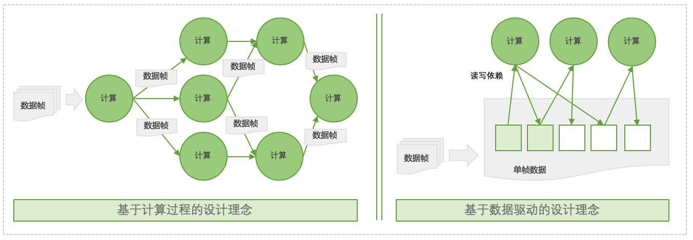
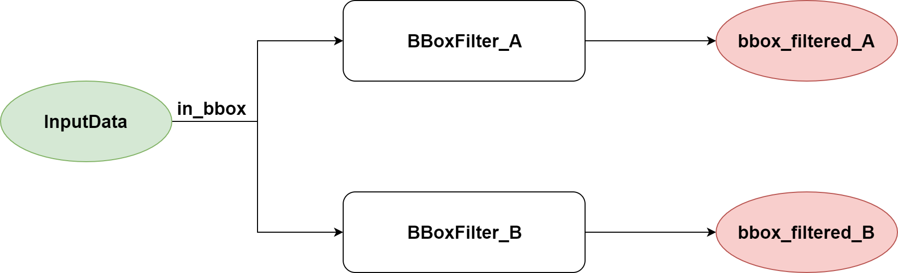
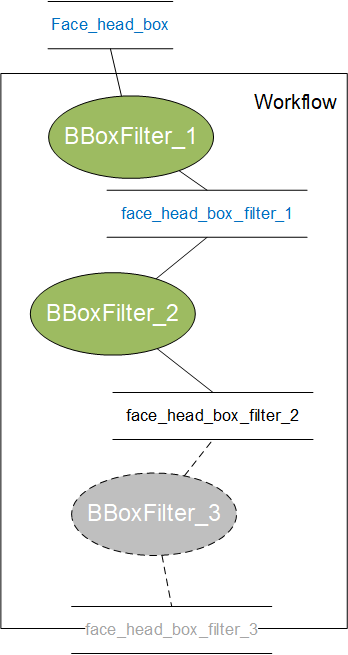
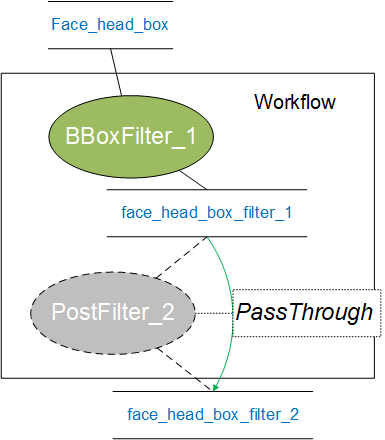
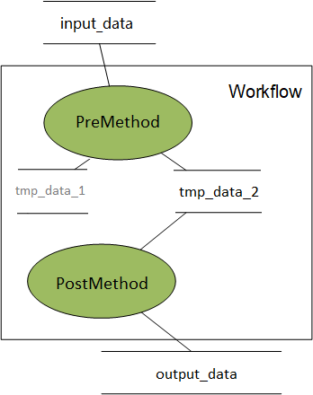
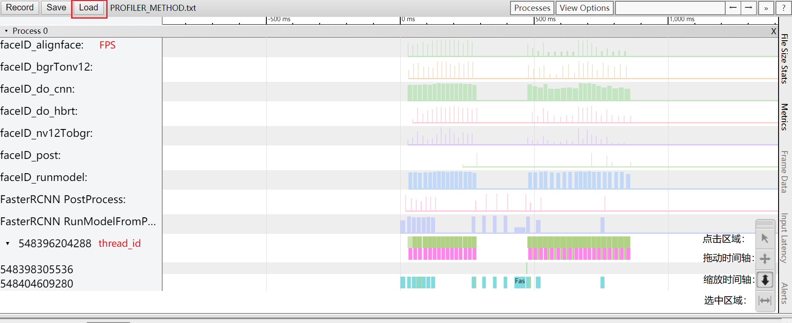
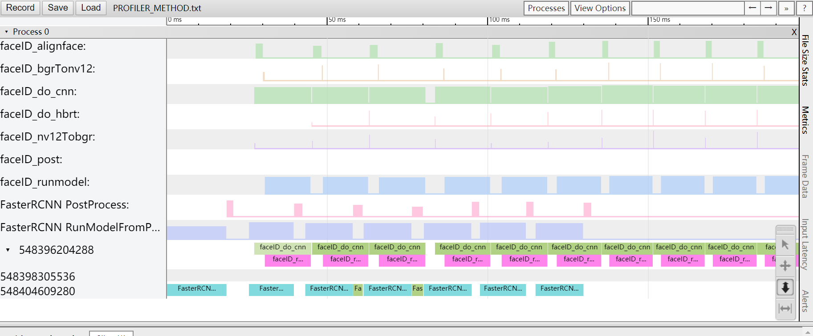
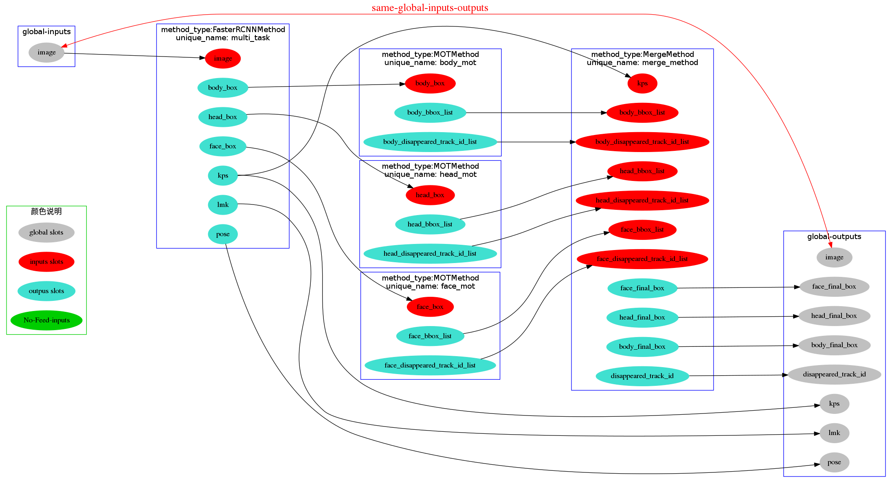

XStream算法SDK编程框架开发指南¶
本文介绍XStream的开发指南，包含XStream-Framework的接口说明、开发流程讲解以及XStream的特性说明。此外会介绍XStream提供的示例代码功能描述。
最后会描述XStream内置的数据结构、Method以及图像处理接口。这些内置模块在沉淀的参考解决方案中大量使用，若想复用那些解决方案，建议对这些内置的模块也熟悉了解，若是基于XStream框架重新开发，则可以完全不依赖这些内置模块。
XStream设计理念¶
XStream Framework，是一套基于C++实现的算法SDK编程框架。
框架通过Workflow来表示一个计算有向图：框架支持通过Json配置或Python代码两种方式来构建一个有向图。
Workflow计算拓扑图中每一个计算任务由Method来表示，它为框架核心计算组件。在智能业务中，Method通常表示一个模型推理(如检测、分类、识别等等)或者一个智能策略（如过滤策略、融合策略、优选策略等等）。在XStream-Framework框架内部，Method会被包装在一个Node节点对象中，XStream-Framework框架由Node对象自动完成Method实例创建、初始化、分配线程资源、任务分发、参数配置等。
框架提供API接口将Workflow计算拓扑加载到内存，实现Workflow的加载、执行和调度，并对外提供计算API接口。计算接口参数为待计算的数据帧。通过接口，可以将一个由InputData表示的输入数据帧通过计算拓扑计算完成以后，返回一条或多条
OutputData输出数据帧。OutputData数据中会记录该帧数据计算结果以及计算状态。
为了达到简洁，易用，高效的设计目标，XStream-Framework采用了一种数据驱动理念来进行设计。相比与另一种面向计算过程任务流实现方式，数据驱动设计理念不强调任务流中两个计算节点之间的数据流向，不关心任务流中两节点间数据交换和调度过程，而是通过数据是否可用等数据驱动的方式来对每个计算节点进行独立调度。
下图是两种设计理念的架构图：

其中采用数据驱动的设计理念，可以获得以下收益：
简化数据流配置：基于数据驱动的Workflow拓扑图配置，我们不需要关系拓扑中两个计算节点之间的强链路依赖关系，而只需关心整个Workflow的输入输出数据内容以及每个计算节点数据输入输出内容。这对于一些复杂的数据流场景，可以极大简化workflow设计代价。同时我们可以非常灵活的在拓扑加入新的”专家知识”计算节点来对数据进行加工，持续强化workflow功能。
高效的内存使用：数据驱动设计方案关注的是数据字段有效性和可用性，框架可以根据数据依赖关系决定单帧数据内部分字段的有效性，在合适时机将无效数据进行内存回收。相比面向计算过程设计思路，可以极大缩短无效字段数据的生命周期，提高内存的利用效率。
高效的调度效率:相比面向计算过程的设计思路,数据驱动在保持计算调度策略简洁的情况下，可以实现极高的调度效率。
XStream除了支持客户完成自定义Method开发、Workflow配置和算法SDK开发之外，还内置了大量可复用的算法Method和策略Method，支持客户更快完成场景应用逻辑开发。
总之，开发者定义XStream-Framework框架内的数据类型以及Method实现，构建一个workflow，就可以生成一个算法预测SDK(二进制库)。该算法预测SDK的接口在XStream-Framework内已经定义。XStream-Framework框架本身完成workflow的构建、Method的对象创建与运行。
XStream组成¶
XStream源码由XStream-Framework、tutorials、vision_type、methods、imagetools组成。各个组件的功能描述如下：
XStream-Framework: XStream算法SDK编程框架，定义了最基础的数据类型定义以及Metho的定义；完成Graph的构建以及调度；提供C++接口，支持同步预测/异步预测等功能；支持多路输入、多路输出、子workflow、Profiler、Node输出回调、Method运行参数控制、超时预警等特性；提供数据流可视化工具。开发者基于XStream-Framework库+API接口+基础数据类型定义+Method定义完成SDK开发
tutorials: XStream-Framework使用的示例，计划覆盖所有的功能特性
vision_type: 沉淀了视觉相关的数据结构，比如金字塔图像、矩形框、分割、分类属性等。沉淀的solution中大量使用这些数据结构。客户基于XStream-Framework重新开发，可以不依赖vision_type
methods: 沉淀了XStream-Framework框架下一些Method，比如FasterRCNNMethod、CNNMethod、MotMethod。沉淀的solution中大量使用这些数Method。客户基于XStream-Framework重新开发，可以不依赖这些Method
imagetools: 沉淀了一套图像处理的C++库，内部封装了OpenCV、libyuv、libturbojpeg等开源库，提供图像解码、图像格式转换、图像缩放、抠图、padding、镜像翻转、中心旋转等功能。客户基于XStream-Framework重新开发，可以不依赖imagetools
其中XStream-Framework是XStream的核心，客户可以完全基于XStream-Framework，开发Method，构建workflow，完成客户的需求。
XStream-Framework用户手册¶
通过本节介绍，你可以熟悉XStream Framework的使用以及内部核心概念。
XStream Framework是一种基于C++实现的基于数据流的编程框架。XStream Framework内部将能⼒组装成Method的形式，每个Method有特定的输入与特定的输出，多个Method通过数据流串联起来，完成一个完整的业务功能集，对外提供服务。XStream Framework的作用是对Method进行抽象、对Method的输入与输出数据结构进行抽象、完成Method的调度等功能。
基本概念与运行机制¶
workflow：将一些计算任务级联在一起构建的有向无环图，它定义了一种工作范式。如人脸检测、跟踪、属性（人脸朝向、人脸清晰度等）以及优选策略等计算任务级联在一起定义了一个人脸抓拍范式。
XStreamSDK：对外SDK类，提供初始化、设置配置和同步、异步调用等接口。
Method：框架核心计算组件，在智能业务中Method通常表示一个模型推理(如检测、分类、识别等等)或者一个智能策略（如过滤策略、融合策略、优选策略等等）。
Node：workflow图中一个计算节点，负责method实例创建、分配线程资源、任务分发、参数配置等。每个Node管理了一个或多个method实例。
Slot：每个node的输入或者输出端口。
Data：Workflow中的每个node之间流转的数据表示，数据表现为一帧一帧，每帧会分配一个唯一单调递增的sequence_id。其中InputData为workflow的输入数据，OutputData为workflow输出数据。
Param：Param为一个配置信息，它可以是一个json字符串，也可以是一个普通字符串，支持在框架以及自定义Method实现中进行解析。
Scheduler：调度引擎，根据配置workflow的json文件，负责初始化所有Node，构建Node数据依赖关系，当有数据帧输入时，统一调度各个Node，以获取输出结果。
MethodManager：用来管理一个Node对象内部的多个Methods，内部会构建一个线程池，根据Method的线程安全属性实例化不同数量的Method实例。
基础数据结构描述¶
基于数据驱动的框架设计，其中最为重要的部分是数据表示，它包括数据帧的表示以及数据帧内每个字段的表示。在数据驱动设计下，数据帧中的每个字段需要有一定的机制来标识数据状态，比如VALID、INVALID、FILTERED、INVISIBLE等，进而可以利用这些状态来实现调度。
在XStream中，通过BaseData，BaseDataVector,XStreamData,InputData,OutputData，InputParam等基础数据类型来表示数据和配置参数。
1.BaseData¶
Workflow中的每个Node之间流转的数据都是从BaseData继承而来，它定义如下：
namespace xstream {
struct BaseData {
BaseData();
virtual ~BaseData();
std::string type_ = "";// 类型
std::string name_ = "";// 名称
int error_code_ = 0;// 错误码
std::string error_detail_ = "";// 错误信息
std::shared_ptr<CContext> c_data_;// C数据结构上下文
DataState state_ = DataState::VALID;// 状态
};
enum class DataState {
VALID = 0,// 有效
FILTERED = 1,// 被过滤掉
INVISIBLE = 2,// 不可见
DISAPPEARED = 3,// 消失
INVALID = 4, // 无效
};
// 还预定义了数组和从普通数据类型快速转化为XStream数据表示的模板：
struct BaseDataVector : public BaseData {
BaseDataVector();
std::vector<BaseDataPtr> datas_;
};
// 类模板，value可以为任意类型的数据
template<typename Dtype>
struct XStreamData : public BaseData {
Dtype value;
XStreamData() {}
explicit XStreamData(const Dtype& val) {
value = val;
}
};
实例：定义XStream框架BBox数据结构【推荐方法】
struct BBox : public BaseData {
float x1 = 0;
float y1 = 0;
float x2 = 0;
float y2 = 0;
}
实例：将一个已有的BBox数据结构包装为可以输入到XStream中数据表示。
struct BBox_ { // 已有数据结构
float x1 = 0;
float y1 = 0;
float x2 = 0;
float y2 = 0;
};
typedef XStreamData<BBox_> BBox;
2.InputParam¶
InputParam定义了内置执行参数的基类，用户可以继承基类实现自定义参数类.它
class InputParam {
public:
explicit InputParam(const std::string &unique_name) {
unique_name_ = unique_name;
is_json_format_ = false;
is_enable_this_method_ = true;
}
virtual ~InputParam() = default;
virtual std::string Format() = 0;
public:
bool is_json_format_;
bool is_enable_this_method_;
std::string unique_name_;
};
typedef std::shared_ptr<InputParam> InputParamPtr;
3.InputData¶
InputData定义了workflow的输入数据，整体结构表现为一帧一帧的数据流。
// 输入数据类型
struct InputData {
// 用户输入的数据，比如图片、channel、框等等
std::vector<BaseDataPtr> datas_;
// 当前请求自定义的参数
std::vector<InputParamPtr> params_;
// 数据源 id 用于多路输入时区分输入源,单一源情况赋值为 0
uint32_t source_id_ = 0;
// 透传的数据，该数据会透传到OutputData::context_ 字段
const void *context_ = nullptr;
};
4.OutputData¶
OutputData定义了workflow的输出数据，整体结构表现为一帧一帧的数据流。
// 输出数据类型
struct OutputData {
int error_code_ = 0;// 错误码
std::string error_detail_ = "";// 错误信息
// 当该OutputData为给某个Method的定向回调结果时，该字段用于指示Method名称
std::string unique_name_ = "";
std::string output_type_ = "";// 多路输出结果名称
std::vector<BaseDataPtr> datas_;// 输出结果
const void *context_ = nullptr;// 从InputData透传过来的数据
int64_t sequence_id_ = 0;// 该结果的序列号
uint32_t source_id_ = 0;// 该结果是属于那个输入源产生的结果
uint64_t global_sequence_id_ = 0;
};
typedef std::shared_ptr<OutputData> OutputDataPtr;
error_code_等字段记录了该数据在处理过程中是否成功信息。
Method接口描述¶
Method是框架中核心计算组件，在智能业务中Method通常表示一个模型推理(如检测、分类、识别等等)或者一个智能策略（如过滤策略、融合策略、优选策略等等）。但是XStream Framework框架本身，Method是不区分模型推理或智能策略，我们开放接口支持客户定义任意计算逻辑。
1.Method基类定义¶
下面是Method的接口类：
namespace xstream {
class Method {
public:
virtual ~Method();
/// 初始化
virtual int Init(const std::string &config_file_path) = 0;
virtual int Init(const Json::Value &config) { return -1; }
/// 获取Method运行参数配置
virtual InputParamPtr GetParameter() const = 0;
// 动态改变Method运行参数配置
virtual int UpdateParameter(InputParamPtr ptr) = 0;
/// 获取Method版本号，比如 metric_v0.4.0 或者 MD112 等
virtual std::string GetVersion() const = 0;
/// 获取Method基本信息
virtual MethodInfo GetMethodInfo();
/// 用于告知Method整个SDK的Profiler状态更改
virtual void OnProfilerChanged(bool on) = 0;
// 数据处理函数，第一个参数是输入数据（双重vector，外层vector表示batch是多帧的输入
// 内层的vector表示单帧的数据列表），
// 内层vector对应workflow的"inputs"输入列表
virtual std::vector<std::vector<BaseDataPtr>> DoProcess(
const std::vector<std::vector<BaseDataPtr>> &input,
const std::vector<InputParamPtr> ¶m) = 0;
/// 析构
virtual void Finalize() = 0;
};
typedef std::shared_ptr<Method> MethodPtr;
} // namespace xstream
初始化：Method初始化支持读取一个配置文件进行初始化或一个配置字符串进行初始化，在Workflow构建时候，会做相应的配置，详细参见workflow构建
资源回收：Method作为计算组件，初始化过程中会申请占用一些计算资源和存储资源，在SDK退出时，需要严格对申请资源进行回收，避免资源泄漏。
参数更新: 除了初始化设置Method参数，框架也支持通过
XStreamSDK::UpdateConfig接口在运行时动态调整Method内部的参数。MethodInfo: 定义了Method属性信息，详细参见Method属性
计算接口：
DoProcess定义了Method实际计算逻辑。函数输入
input和函数返回值都是按照Batch方式进行数据帧处理，BatchNum=1时即为单帧数据处理，通过该设计来满足一些需要Batch计算的场景需求。输入参数
input的每个Batch数据类型为std::vector<BaseDataPtr>。在数据驱动调度方式中，框架会根据workflow Node定义传递相应字段数据到函数中，而非帧数据的全部字段。函数返回值的每个Batch数据类型也为
std::vector<BaseDataPtr>。框架会根据workflow Node定义字段，将会返回值写回到相应帧中。因此需要保证返回值帧字段个数与配置个数一致。输入参数
param的每个Batch数据类型为InputParamPtr，每个InputParamPtr是method单帧处理输入输出的特殊处理配置，详细可参考Method运行参数控制。参考下面Methode Node定义实例：每个数据帧输入字段数目为1个
image,输出的字段数目为3个，分别是rgb_face_box,rgb_lmk,rgb_pose。
{ "method_type": "FasterRCNNMethod", "inputs": [ "image" ], "outputs": [ "rgb_face_box", "rgb_lmk", "rgb_pose" ], "method_config_file": "face_pose_lmk.json" }
2.MethodFactory定义¶
定义MethodFactory以实现Method的实例化，下面是MethodFactory的定义：
namespace xstream {
namespace method_factory {
// 默认全局Method Factory工厂函数的声明
// 该符号为一个弱符号,也就是说:如果这个函数没有
// 被定义,编译链接仍然成功,但是使用的时候会报错
// 这样做的好处是,如果用户不使用Default Method Factory,
// 就不需要再定义一个为了防止链接出错的空函数放进代码里
__attribute__ ((weak)) // NOLINT
MethodPtr CreateMethod(const std::string &method_name);
}
} // namespace xstream
CreateMethod：用户在自定义Method后，需要通过实现CreateMethod完成Method实例创建。MethodFactory的工厂函数会根据不同的method_name名字返回对应的Method的实例，workflow中用到的Method都需要添加到该函数中。
示例：参考下面Methode Node定义实例，需要实例化FasterRCNN Method和CNNMethod。
{
"method_type": "FasterRCNNMethod",
"inputs": [
"image"
],
"outputs": [
"rgb_face_box",
"rgb_lmk",
"rgb_pose"
],
"method_config_file": "face_pose_lmk.json"
},
{
"method_type": "CNNMethod",
"unique_name": "age_gender",
"inputs": [
"rgb_face_box",
"image"
],
"outputs": [
"age",
"gender"
],
"method_config_file": "age_gender.json"
}
实现具体的CreateMethod：
namespace xstream {
namespace method_factory {
MethodPtr CreateMethod(const std::string &method_name) {
if ("FasterRCNNMethod" == method_name) {
return MethodPtr(new FasterRCNNMethod());
} else if ("CNNMethod" == method_name) {
return MethodPtr(new CNNMethod());
} else {
return MethodPtr();
}
}
} // namespace method_factory
} // namespace xstream
3.Method属性¶
自定义Method，可以通过实现virtual MethodInfo GetMethodInfo();函数来对Method的一些属性进行配置。
MethidInfo定义如下：
struct MethodInfo {
// 是否线程安全
bool is_thread_safe_ = false;
// 是否需要做reorder，也就是让每一帧结果的返回顺序同请求顺序。
bool is_need_reorder = false;
// 是否对输入源有前后文依赖 source context dependent
bool is_src_ctx_dept = false;
};
其中is_thread_safe_和is_need_reorder两个属性最为重要：
属性is_thread_safe_定义了Method是否为线程安全。在Workflow定义时候，支持配置Node的线程数。如果线程数配置大于1，此时要求Method计算过程的实现，需要满足线程安全的要求。默认值是false，在需要配置Method多实例并发时，需要设置该属性为True。
属性is_need_reorder定义了是否要求数据按顺逐帧调用Method计算函数。比如一些目标跟踪场景，要求输出数据是有序的。默认是false，表示为不要求有序。
注意：在is_reorder=true的method，由于有前后帧序依赖，线程数只允许为1。同时is_reorder会一定程度上降低Method执行效率。
XStream-Framework接口描述¶
XStream Framework主要功能是支持用户自定义Method计算任务，为了更直观地让用户熟悉XStream Framework的使用，我们现在来介绍下XStream Framework的接口。
1.XStream SDK接口说明¶
namespace xstream {
/**
* 典型使用
* xstream::XStreamSDK *flow = xstream::XStreamSDK::CreateSDK();
* flow->SetConfig("config_file", config);
* flow->Init();
* InputDataPtr inputdata(new InputData());
* // ... 构造输入数据
* auto out = flow->SyncPredict(inputdata);
* // PrintOut(out);
* // ... 处理输出结果
* delete flow;
*/
// 数据流提供的接口
class XStreamSDK {
public:
// 因为构造出来的实例是XStreamSDK接口的子类
virtual ~XStreamSDK() {}
// 通过此方法构造SDK实例
static XStreamSDK *CreateSDK();
//说明：用于设置整个workflow的配置，目前支持的功能有：
//1）key为"config_file"，value设置为workflow的配置路径，它定义整个workflow数据流。
//2）key为"profiler"，value为"on"，表示打开性能统计功能。"off"表示关闭, 默认为关闭。
//3）key为"profiler_file",value为性能统计输出文件路径，用于设置性能统计文件的路径名称，默认为./profiler.txt
//4）key为"free_framedata", value为"on", 表示尽早地释放掉在后面node节点中不再需要使用的Framework Data中的某项数据。
//打开此项配置,可以减少峰值内存使用。"off"表示关闭, 默认为关闭。
virtual int SetConfig(const std::string &key, const std::string &value) = 0;
//用于初始化xstream句柄，必须在调用SetConfig之后执行Init()
virtual int Init() = 0;
// 用于设置node的参数，最终会通过调用对应的node管理的method实例的UpdateParameter(InputParamPtr ptr)接口，完成参数的更新。
// 形参unique_name传入node的名字；形参ptr为该node对应的配置信息
virtual int UpdateConfig(const std::string &unique_name, InputParamPtr ptr) = 0;
//获取某个node的参数，最终会调用对应的node管理的method实例的GetParameter()返回配置信息。
virtual InputParamPtr GetConfig(const std::string &unique_name) const = 0;
// 获取node对应method的版本信息。
virtual std::string GetVersion(const std::string &unique_name) const = 0;
// 同步运行接口，传⼊数据，接口会阻塞住，直到整个workflow处理完成，将workflow的结果通过函数返回值返回为止。
// 该接口需要在Init()之后执行才有效。
virtual OutputDataPtr SyncPredict(InputDataPtr input) = 0;
// 同步多路输出的场景下， 输出接口可以通过output_type_信息判断输出类型。
virtual OutputDataPtr SyncPredict2(InputDataPtr input) = 0;
// 使用异步运行接口时，设置SetCallback才有效。
// 将name设置为默认值，通过该接口可以设置整个workflow处理完成后的回调函数；
// 将name设置为某个node的unique名字，通过该接口可以设置该node处理数据完成后的回调函数。
virtual int SetCallback(XStreamCallback callback, const std::string &name = "") = 0;
// 异步运行接口，结果通过SetCallback设置的回调函数捕获。AsyncPredict接口调用后立即返回。
// 该接口需要在Init()之后执行才有效。
virtual int64_t AsyncPredict(InputDataPtr input) = 0;
};
XStreamSDK核心功能是将一个Workflow配置转化为算法SDK：
XStreamSDK实例创建：每个XStreamSDK实例，对应一个具体的workflow。同一个进程，可以创建多个XStreamSDK实例，用于运行不同的workflow。
XStreamSDk实例配置：其中最重要是
config_file，它即为Workflow配置。同时也支持通过UpdateConfig和GetConfig来动态获取和修改Workflow中各个配置。XStreamSDk实例初始化：即
Init过程，它基于config_file定义的Workflow配置，完成计算拓扑的构建和初始化。XStreamSDk预测接口：针对一个InputData数据进行计算，返回一个OutputData数据。当前支持同步计算和异步回调两种模式。
2.XStream SDK接口使用¶
同步运行模式：通过SyncPredict函数堵塞进行调用。
实例代码如下:
// xstream/tutorials/stage1/sync_main.cc
using xstream::BaseData;
using xstream::BaseDataPtr;
using xstream::BaseDataVector;
using xstream::InputData;
using xstream::InputDataPtr;
auto config = argv[1];
xstream::XStreamSDK *flow = xstream::XStreamSDK::CreateSDK();
flow->SetConfig("config_file", config);
flow->Init();
/// Get Method Version
std::cout << "BBoxFilter_A Method Version : "
<< flow->GetVersion("BBoxFilter_A") << std::endl;
float x1{0}; // BBox(框)的左上角横坐标
float y1{20}; // BBox(框)的左上角纵坐标
float x2{0}; // BBox(框)的右上角横坐标
float y2{50}; // BBox(框)的右上角纵坐标
// 框的面积计算公式:(x2-x2)*(y2-y1)
// 生成面积为{ 0, 30, 60, 90, 120, 150, 180, 210, 240,
// 270 } 序列,作为BBoxFilter的输入数据
for (int i = 0; i < 10; i++) {
x2 = i;
InputDataPtr inputdata(new InputData());
BaseDataVector *data(new BaseDataVector);
xstream::BBox *bbox(
new xstream::BBox(hobot::vision::BBox(x1, y1, x2, y2)));
bbox->type_ = "BBox";
data->datas_.push_back(BaseDataPtr(bbox));
data->name_ = "in_bbox";
inputdata->datas_.push_back(BaseDataPtr(data));
auto out = flow->SyncPredict(inputdata);
ParseOutput(out);
}
delete flow;
异步运行模式：通过SetCallback设置回调函数，实现AsyncPredict非堵塞调用。
实例代码所示:
// xstream/tutorials/stage1/async_main.cc
using xstream::BaseData;
using xstream::BaseDataPtr;
using xstream::BaseDataVector;
using xstream::InputData;
using xstream::InputDataPtr;
using Stage1Async::Callback;
auto config = argv[1];
xstream::XStreamSDK *flow = xstream::XStreamSDK::CreateSDK();
Callback callback;
// 整个Workflow回调函数
flow->SetCallback(
std::bind(&Callback::OnCallback, &callback, std::placeholders::_1));
flow->SetConfig("config_file", config);
flow->Init();
// BBoxFilter_A回调函数
flow->SetCallback(
std::bind(&Callback::OnCallback, &callback, std::placeholders::_1),
"BBoxFilter_A");
// BBoxFilter_B回调函数
flow->SetCallback(
std::bind(&Callback::OnCallback, &callback, std::placeholders::_1),
"BBoxFilter_B");
float x1{0}; // BBox(框)的左上角横坐标
float y1{20}; // BBox(框)的左上角纵坐标
float x2{0}; // BBox(框)的右上角横坐标
float y2{50}; // BBox(框)的右上角纵坐标
// 框的面积计算公式:(x2-x2)*(y2-y1)
// 生成面积为{ 0, 30, 60, 90, 120, 150, 180, 210, 240,
// 270 } 序列,作为BBoxFilter的输入数据
for (int i = 0; i < 10; i++) {
x2 = i;
InputDataPtr inputdata(new InputData());
BaseDataVector *data(new BaseDataVector);
xstream::BBox *bbox(
new xstream::BBox(hobot::vision::BBox(x1, y1, x2, y2)));
bbox->type_ = "BBox";
data->datas_.push_back(BaseDataPtr(bbox));
data->name_ = "in_bbox";
inputdata->datas_.push_back(BaseDataPtr(data));
auto out = flow->AsyncPredict(inputdata);
// waiting for async function done
std::this_thread::sleep_for(std::chrono::milliseconds(10));
}
std::this_thread::sleep_for(std::chrono::milliseconds(1000));
delete flow;
XStream workflow构建¶
workflow定义了整个计算拓扑结构，XStream SDK支持读取Workflow配置文件来在构建一个算法SDK。文件内容为一个json字符串，它定义了一个完整的workflow拓扑结构。
1.workflow骨架结构¶
下面是一个workflow配置示例
{
"name": "workflow",
"type": "workflow",
"inputs": ["face_head_box"],
"outputs": ["face_head_box_filter2"],
"workflow": [
{
"thread_count": 3,
"method_type": "BBoxFilter",
"unique_name": "BBoxFilter_1",
"inputs": [
"face_head_box"
],
"outputs": [
"face_head_box_filter"
],
"method_config_file": "null"
},
{
"thread_count": 3,
"method_type": "BBoxFilter",
"unique_name": "BBoxFilter_2",
"inputs": [
"face_head_box_filter"
],
"outputs": [
"face_head_box_filter2"
],
"method_config_file": "null"
}
]
}
它的骨干结构如下：
{
"name": "xxx", // workflow名称，需唯一化
"type": "workflow", // 表示Workflow对象
"inputs": [], // 输入slots名称
"outputs": [], // 输出slots名称
"workflow": [ // Workflow内容，包括Node或Workflow对象(子workflow)
]
}
name定义了workflow名称，默认可以省略，内部会自定生成一个唯一名称。inputs/outputs定义了workflow整个有效输入输出名称。workflow定义了整个拓扑的结构，它由多个Node或Workflow对象(子workflow)组成。Node之间通过inputs和outputs字段来构建起数据依赖。
2.inputs/outputs定义¶
对于XStream SDK的virtual OutputDataPtr SyncPredict(InputDataPtr input) = 0;函数，InputDataPtr定义了整个workflow的输入数据，OutputDataPtr定义了整个workflow的输出数据。
workflows的inputs数据字段名称需要与InputDataPtr的数据字段对应，在基于数据驱动框架中，如果InputDataPtr中字段缺失，可能会导致该帧数据无法被处理。
workflow在计算过程中，一些中间Method可能会产生一些中间结果，这些中间结果可能也会成为其他中间Method的输入，但是可以不是整个Workflow的输出。
3.Node定义¶
Node是一个计算单元，它包装了Method的配置与定义，它的骨干结构如下：
{
"type": "node", // 表示Node对象
"method_type": "TestMethod", // Method类型，需要实现该Method
"unique_name": "method", // Node名称，唯一性标志
"thread_count": 3,
"inputs": ["global_in"], // 输入slots
"outputs": ["global_out"], // 输出slots
"method_config_file": "face_pose_lmk.json" // Method配置文件
// ...
}
type=node表示当前节点是一个Method类型单一Node节点。用于区分type=workflow子workflow类型节点，详细参见子workflow定义。method_type当前Node所使用的Method名称，Node初始化时，会通过一个工厂类来实现method_type到Method对象实例的初始化。MethodFactory的实现可以参考MethodFactory定义。unique_name用于唯一标识一个Node对象实例。thread_count配置Node并发副本数目，如果Method是线程安全的，可以通过设置线程数目来提高计算并发能力。inputs/outputs定义了Method的输入输出名称。method_config_file配置文件，在Method init初始化时候，会将路径传递给Method，Method内部负责读取文件并完成Method的初始化。
除此之外，针对Method类型单Node节点，还可以配置线程调度相关参数，详细参考workflow调度。
4.子workflow定义¶
在一些复杂的业务场景中，我们可以将一个Node表示为一个Workflow，通过子Workflow的功能来实现Workflow嵌套。详细参见子workflow定义
5.基于Python来构建Workflow配置文件¶
在一些复杂的业务场景中，json文件本身较为复杂，当前在缺乏可视化拖拉拽方式时候，我们也提供一个基于python脚本来构建workflow的工具，简化workflow json配置，提高workflow可复用率。详细参见Python-Workflow构建
XStream开发示例¶
本节将Step by step介绍如何基于XStream完成一个业务场景下的SDK的开发。
基于XStream的开发，一般流程如下：
明确需求：确定输入、输出数据；
功能抽象：开发Method，主要是DoProcess的逻辑；
构建workflow：配置基于数据流的拓扑有向图；
运行结果：调用xstream sdk接口获取输出结果。
2.Method开发¶
根据上面的功能描述，需要实现一个根据面积过滤框的Method，命名为BBoxFilter。
2.1定义数据类型¶
BBoxFilter Method需要输入一组BBox，输出一组BBox，因此需要定义的数据类型为BBox。
// xstream/tutorials/stage1/method/b_box.h
namespace hobot {
namespace vision {
template <typename Dtype>
struct BBox_ {
inline BBox_() {}
inline BBox_(Dtype x1_, Dtype y1_, Dtype x2_, Dtype y2_, float score_ = 0.0f,
int32_t id_ = -1, const std::string &category_name_ = "") {
x1 = x1_;
y1 = y1_;
x2 = x2_;
y2 = y2_;
id = id_;
score = score_;
category_name = category_name_;
}
inline Dtype Width() const { return (x2 - x1); }
inline Dtype Height() const { return (y2 - y1); }
inline Dtype CenterX() const { return (x1 + (x2 - x1) / 2); }
inline Dtype CenterY() const { return (y1 + (y2 - y1) / 2); }
Dtype x1 = 0;
Dtype y1 = 0;
Dtype x2 = 0;
Dtype y2 = 0;
float score = 0.0;
int32_t id = 0;
std::string category_name = "";
};
typedef BBox_<float> BBox;
}
Note: 为了统一基础数据结构定义，我们在vision_type中预定义了一组基础数据类型，包括检测框BBox、关键点Landmark、人脸3DPose信息、基础图像帧表示等，你可以直接复用，详细参考xstream/vision_type目录。
2.2数据类型封装¶
基于XStreamData将自定义数据类型需要封装为在XStream数据表示，从而支持在XStream中流转。
// xstream/tutorials/stage1/method/b_box.h
typedef XStreamData<hobot::vision::BBox> BBox;
输入输出是一组BBox，因此是一个BaseDataVector, 构成一个BBox数组的方式为：
BaseDataVector *data(new BaseDataVector);
xstream::BBox *bbox1(new hobot::vision::BBox(20, 100, 30, 105));
bbox1->type_ = "BBox";
data->datas_.push_back(BaseDataPtr(bbox1));
xstream::BBox *bbox2(new hobot::vision::BBox(5, 50, 60, 68));
bbox2->type_ = "BBox";
data->datas_.push_back(BaseDataPtr(bbox2));
2.3Method实现¶
继承Method基类，实现BBoxFilter Method
// xstream/tutorials/stage1/method/b_box_filter.h
#include "hobotxstream/method.h"
namespace xstream {
class BBoxFilter : public Method {
public:
// 价值json配置参数，完成method初始化
int Init(const std::string &config_file_path) override;
// 数据处理函数，第一个参数是输入数据（双重vector，外层vector表示batch是多帧的输入
// 内层的vector表示单帧的数据列表），
// Note：由于目前XStream框架接口并没有支持Batch模式，外层的vector恒等于1
std::vector<std::vector<BaseDataPtr>> DoProcess(
const std::vector<std::vector<BaseDataPtr>> &input,
const std::vector<xstream::InputParamPtr> ¶m) override;
// 析构
void Finalize() override {}
// 动态改变Method运行参数配置
int UpdateParameter(InputParamPtr ptr) override;
// 获取Method运行参数配置
InputParamPtr GetParameter() const override;
// 获取Method版本号，比如 metric_v0.4.0 或者 MD112 等
std::string GetVersion() const override {
return "BBoxFilter_test_v0.0.1";
}
// 当workflow的profile状态发生变化时，调用该函数.
void OnProfilerChanged(bool on) override {}
private:
// 过滤bbox的面积阈值
std::atomic<float> area_threshold_;
};
} // namespace xstream
DoProcess：根据面积过滤框，这里没有直接过滤掉框，而是设置了Filter状态，最终输出可以通过检查状态位得到剩余框（未被过滤的框状态应为VALID）：
// xstream/tutorials/stage1/method/b_box_filter.cc
std::vector<std::vector<BaseDataPtr>> BBoxFilter::DoProcess(
const std::vector<std::vector<BaseDataPtr>> &input,
const std::vector<InputParamPtr> ¶m) {
std::cout << "BBoxFilter::DoProcess" << std::endl;
std::vector<std::vector<BaseDataPtr>> output;
output.resize(input.size());
for (size_t i = 0; i < input.size(); ++i) {
// 当前不支持batch模式，batch恒等于1
assert(i <= 1);
auto &in_batch_i = input[i];
auto &out_batch_i = output[i];
out_batch_i.resize(in_batch_i.size());
std::cout << "input size: " << in_batch_i.size() << std::endl;
// 只支持n个输入，输入格式是BBox的数组
for (size_t j = 0; j < in_batch_i.size(); ++j) {
auto in_rects = std::static_pointer_cast<BaseDataVector>(in_batch_i[j]);
assert("BaseDataVector" == in_rects->type_);
auto out_rects = std::make_shared<BaseDataVector>();
out_batch_i[j] = std::static_pointer_cast<BaseData>(out_rects);
for (auto &in_rect : in_rects->datas_) {
auto bbox = std::static_pointer_cast<xstream::BBox>(in_rect);
// 因为BBoxFilter_A和BBoxFilter_B使用智能指针指向同一份输入数据，为避免两个Filter在一个处理完成后修改State，
// 影响另一个Filter处理输入数据，这里会将原来的输入数据copy一份
auto out_rect = BaseDataPtr(new xstream::BBox(bbox->value));
out_rect->type_ = bbox->type_;
// 如果已经被之前的模块过滤掉，直接传递到输出。
if (in_rect->state_ == DataState::FILTERED) {
out_rects->datas_.push_back(in_rect);
continue;
}
assert("BBox" == out_rect->type_);
if (bbox->value.Width() * bbox->value.Height() > area_threshold_) {
out_rects->datas_.push_back(out_rect);
} else {
std::cout << "B filter: " << bbox->value.x1 << "," << bbox->value.y1
<< "," << bbox->value.x2 << "," << bbox->value.y2
<< std::endl;
// 设置过滤状态，输出通过该状态过滤
out_rect->state_ = DataState::FILTERED;
out_rects->datas_.push_back(out_rect);
}
}
}
}
return output;
}
初始化时需要解析json配置参数，初始化不同的阈值，对模块A需要过滤掉面积小于100的框，a_filter.json配置为：
{
"threshold" : 100
}
b_filter.json配置为：
{
"threshold" : 200
}
需要注意的是Init输入参数为Json config文件路径，并不是json配置文件本身，需要先load文件然后完成json解析:
// xstream/tutorials/stage1/method/b_box_filter.cc
int BBoxFilter::Init(const std::string &config_file_path) {
std::ifstream infile(file_path);
Json::Value cfg_jv;
infile >> cfg_jv;
infile.close();
area_threshold_ = cfg_jv["threshold"].asFloat();
return 0;
}
如果需要运行时更新阈值，需要实现UpdateParameter
// xstream/tutorials/stage1/method/b_box_filter.cc
int BBoxFilter::UpdateParameter(InputParamPtr ptr) {
auto real_ptr = dynamic_cast<xstream::FilterParam *>(ptr.get());
if (real_ptr->HasThreshold()) {
area_threshold_ = real_ptr->GetThreshold();
}
return 0;
}
UpdateParameter的输入参数类型是InputParamPtr，这是XStream定义的参数类型的基类，用户需要继承该基类实现自定义的输入参数类FilterParam：
// xstream/tutorials/stage1/filter_param.h
#include "hobotxsdk/xstream_data.h"
namespace xstream {
typedef struct _FilterParam__isset {
_FilterParam__isset() : threshold(false) {}
bool threshold : 1;
} _FilterParam__isset;
class FilterParam : public InputParam {
public:
explicit FilterParam(std::string unique_name) : InputParam(unique_name) {
threshold_ = 2500.0;
}
virtual ~FilterParam() = default;
virtual std::string Format() {
return std::string("threshold") + std::to_string(threshold_);
}
void SetThreshold(float thres) {
threshold_ = thres;
is_set_.threshold = true;
}
bool HasThreshold() { return is_set_.threshold; }
float GetThreshold() { return threshold_; }
private:
_FilterParam__isset is_set_;
float threshold_;
};
} // namespace xstream
3.workflow构建¶
filter_workflow.json文件内容如下:
{
"inputs":[
"in_bbox"
],
"outputs":[
"bbox_filtered_A",
"bbox_filtered_B"
],
"workflow":[
{
"method_type":"BBoxFilter",
"unique_name":"BBoxFilter_A",
"inputs":[
"in_bbox"
],
"outputs":[
"bbox_filtered_A"
],
"method_config_file":"a_filter.json"
},
{
"method_type":"BBoxFilter",
"unique_name":"BBoxFilter_B",
"inputs":[
"in_bbox"
],
"outputs":[
"bbox_filtered_B"
],
"method_config_file":"b_filter.json"
}
]
}
上面的配置文件对应的workflow如下图:

4.功能集成¶
4.1测试数据准备¶
InputDataPtr inputdata(new InputData());
BaseDataVector *data(new BaseDataVector);
xstream::BBox *bbox1(new xstream::BBox(
hobot::vision::BBox(20, 100, 30, 105)));
xstream::BBox *bbox2(new xstream::BBox(
hobot::vision::BBox(40, 50, 60, 68)));
xstream::BBox *bbox3(new xstream::BBox(
hobot::vision::BBox(50, 75, 60, 100)));
bbox1->type_ = "BBox";
bbox2->type_ = "BBox";
bbox3->type_ = "BBox";
std::cout << "bbox1: " << bbox1->value << std::endl;
std::cout << "bbox2: " << bbox2->value << std::endl;
std::cout << "bbox3: " << bbox3->value << std::endl;
data->datas_.push_back(BaseDataPtr(bbox1));
data->datas_.push_back(BaseDataPtr(bbox2));
data->datas_.push_back(BaseDataPtr(bbox3));
data->name_ = "in_bbox";
inputdata->datas_.push_back(BaseDataPtr(data));
如上面章节说明XStream框架中流转的数据需要基于一个公共基类BaseData扩展，产生输入数据时也需要把输入数据先转化为XStream数据表示。 这里做了两次转化：
将基础数据类型hobot::vision::BBox转化为带XStream描述信息的表示：
xstream::BBox *bbox1(new xstream::BBox(
hobot::vision::BBox(20, 100, 30, 105)));
xstream::BBox *bbox2(new xstream::BBox(
hobot::vision::BBox(40, 50, 60, 68)));
xstream::BBox *bbox3(new xstream::BBox(
hobot::vision::BBox(50, 75, 60, 100)));
// 添加数据类型描述信息
bbox1->type_ = "BBox";
bbox2->type_ = "BBox";
bbox3->type_ = "BBox";
xstream::BBox的定义为：
typedef XStreamData<hobot::vision::BBox> BBox;
Workflow的输入数据为一组框，因此需要把上述3个BBox定义组织到数组中，同时数组也要转化为XStream数据表示: BaseData的数组表示为BaseDataVector， BaseDataVector已经是BaseData的子类，可以直接转化为BaseData。
BaseDataVector *data(new BaseDataVector);
...
data->datas_.push_back(BaseDataPtr(bbox1));
data->datas_.push_back(BaseDataPtr(bbox2));
data->datas_.push_back(BaseDataPtr(bbox3));
// 数据的name， 需要和定义的json workflow的输入部分name一致
data->name_ = "in_bbox";
这里需要注意的是输入数据需要添加name信息，name需要和定义的JSON workflow inputs一样，预测时即是通过该信息Feed workflow：
{
"inputs":[
"in_bbox"
],
"outputs":[
"bbox_filtered_A",
"bbox_filtered_B"
]
}
XStream输入数据的数据结构为：
// 输入数据类型
struct InputData {
// 用户输入的数据，比如图片channel、时间戳、框等等
std::vector<BaseDataPtr> datas_;
// 当前请求自定义的参数
std::vector<InputParamPtr> params_;
// 数据源 id 用于多路输入时区分输入源,单一源情况赋值为 0
uint32_t source_id_ = 0;
// 透传的数据，该数据会透传到OutputData::context_ 字段
const void *context_ = nullptr;
};
输入数据存储在datas_中:
data->name_ = "in_bbox";
inputdata->datas_.push_back(BaseDataPtr(data));
4.2Method注册¶
XStream框架构建workflow时，调用全局MethodFactory创建对应Method实例，在使用BBoxFilter之前需要注册到MethodFactory中;
// xstream/tutorials/stage1/method_factory.cc
#include "hobotxstream/method_factory.h"
#include "method/bbox_filter.h"
namespace xstream {
namespace method_factory {
MethodPtr CreateMethod(const std::string &method_name) {
if ("BBoxFilter" == method_name) {
return MethodPtr(new BBoxFilter());
} else {
return MethodPtr();
}
}
} // namespace method_factory
} // namespace xstream
4.3同步预测¶
调用XStreamSDK的class静态接口CreateSDK, 创建一个XStreamSDK的对象，并使用SyncPredict进行同步预测。
构建SDK代码如下：
// xstream/tutorials/stage1/sync_main.cc文件对输入数据稍作改动，改成了循环输入10次数据。
using xstream::BaseData;
using xstream::BaseDataPtr;
using xstream::BaseDataVector;
using xstream::InputData;
using xstream::InputDataPtr;
if (argc < 2) {
std::cout << "Usage : ./bbox_filter_main work_flow_config_file"
<< std::endl;
std::cout << "Example : ./bbox_filter_main ./filter_workflow.json"
<< std::endl;
return -1;
}
auto config = argv[1];
xstream::XStreamSDK *flow = xstream::XStreamSDK::CreateSDK();
flow->SetConfig("config_file", config);
flow->Init();
float x1{0}; // BBox(框)的左上角横坐标
float y1{20}; // BBox(框)的左上角纵坐标
float x2{0}; // BBox(框)的右上角横坐标
float y2{50}; // BBox(框)的右上角纵坐标
// 框的面积计算公式:(x2-x2)*(y2-y1)
if (argc == 2) {
std::cout << "***********************" << std::endl
<< "testing synchronous function" << std::endl
<< "***********************" << std::endl;
// 生成面积为{ 0, 30, 60, 90, 120, 150, 180, 210, 240,
// 270 } 序列,作为BBoxFilter的输入数据
for (int i = 0; i < 10; i++) {
x2 = i;
InputDataPtr inputdata(new InputData());
BaseDataVector *data(new BaseDataVector);
xstream::BBox *bbox(
new xstream::BBox(hobot::vision::BBox(x1, y1, x2, y2)));
bbox->type_ = "BBox";
std::cout << "main i:" << i << " bbox:" << bbox->value << std::endl;
data->datas_.push_back(BaseDataPtr(bbox));
data->name_ = "in_bbox";
inputdata->datas_.push_back(BaseDataPtr(data));
auto out = flow->SyncPredict(inputdata);
ParseOutput(out);
std::this_thread::sleep_for(std::chrono::milliseconds(10));
}
}
delete flow;
同步预测接口SyncPredict，传⼊输入数据后，接口会阻塞住，直到整个workflow处理完成，将workflow的结果通过函数返回值返回为⽌。该接口需要在Init()之后执⾏才有效。
4.4异步预测¶
调用XStreamSDK的class静态接口CreateSDK, 创建一个XStreamSDK的对象，并使用AsyncPredict进行异步预测。
其中涉及以下两个接口：
接口：
virtual int64_t AsyncPredict(InputDataPtr input) = 0;
说明：异步预测接口，AsyncPredict接⼝调⽤后立即返回，结果通过SetCallback设置的回调函数捕获。
Note:该接⼝需要在Init()之后执⾏才有效。
设置异步回调接口
virtual int SetCallback(XStreamCallback callback, const std::string &name = "") = 0;
说明：使⽤异步分析接口时，设置SetCallback才有效。 将name设置为默认值，通过该接口可以设置整个workflow处理完成后的回调函数； 将name设置为某个Node的unique名字，通过该接口可以设置某个method实例处理完成后的回调函数。
基于异步接口创建sdk的方式：
// xstream/tutorials/stage1/async_main.cc
using xstream::BaseData;
using xstream::BaseDataPtr;
using xstream::BaseDataVector;
using xstream::InputData;
using xstream::InputDataPtr;
using Stage1Async::Callback;
if (argc < 2) {
std::cout << "Usage : ./bbox_filter_main work_flow_config_file"
<< std::endl;
std::cout << "Example : ./bbox_filter_main ./filter_workflow.json"
<< std::endl;
return -1;
}
auto config = argv[1];
xstream::XStreamSDK *flow = xstream::XStreamSDK::CreateSDK();
Callback callback;
// 整个Workflow回调函数
flow->SetCallback(
std::bind(&Callback::OnCallback, &callback, std::placeholders::_1));
flow->SetConfig("config_file", config);
flow->Init();
// BBoxFilter_A回调函数
flow->SetCallback(
std::bind(&Callback::OnCallback, &callback, std::placeholders::_1),
"BBoxFilter_A");
// BBoxFilter_B回调函数
flow->SetCallback(
std::bind(&Callback::OnCallback, &callback, std::placeholders::_1),
"BBoxFilter_B");
// Get Method Version
std::cout << "BBoxFilter_A Method Version : "
<< flow->GetVersion("BBoxFilter_A") << std::endl;
float x1{0}; // BBox(框)的左上角横坐标
float y1{20}; // BBox(框)的左上角纵坐标
float x2{0}; // BBox(框)的右上角横坐标
float y2{50}; // BBox(框)的右上角纵坐标
// 框的面积计算公式:(x2-x2)*(y2-y1)
if (argc == 2) {
std::cout << "***********************" << std::endl
<< "testing synchronous function" << std::endl
<< "***********************" << std::endl;
// 生成面积为{ 0, 30, 60, 90, 120, 150, 180, 210, 240,
// 270 } 序列,作为BBoxFilter的输入数据
for (int i = 0; i < 10; i++) {
x2 = i;
InputDataPtr inputdata(new InputData());
BaseDataVector *data(new BaseDataVector);
xstream::BBox *bbox(
new xstream::BBox(hobot::vision::BBox(x1, y1, x2, y2)));
bbox->type_ = "BBox";
std::cout << "i:" << i << " bbox:" << bbox->value << std::endl;
data->datas_.push_back(BaseDataPtr(bbox));
data->name_ = "in_bbox";
inputdata->datas_.push_back(BaseDataPtr(data));
auto out = flow->AsyncPredict(inputdata);
// waiting for async function done
std::this_thread::sleep_for(std::chrono::milliseconds(10));
}
}
delete flow;
定义和设置 callback：
定义用户的Callback类,实现一个类似OnCallback函数，参数类型为
xstream::OutputDataPtr output，用来处理XStream worflow的回调结果。代码:class Callback { public: void OnCallback(xstream::OutputDataPtr output) { ParseOutput(output); } };
设置callback
Callback::Callback callback; flow->SetCallback( std::bind(&MethodCallback::Callback::OnCallback, &callback, std::placeholders::_1));
4.5预测结果解析¶
// xstream/tutorials/stage1/sync_main.cc
void ParseOutput(xstream::OutputDataPtr output) {
using xstream::BaseDataVector;
std::cout << "=====================" << std::endl;
std::cout << "seq: " << output->sequence_id_ << std::endl;
std::cout << "output_type: " << output->output_type_ << std::endl;
std::cout << "method_unique_name: " << output->unique_name_ << std::endl;
std::cout << "error_code: " << output->error_code_ << std::endl;
std::cout << "error_detail_: " << output->error_detail_ << std::endl;
std::cout << "datas_ size: " << output->datas_.size() << std::endl;
for (auto data : output->datas_) {
if (data->error_code_ < 0) {
std::cout << "data error: " << data->error_code_ << std::endl;
continue;
}
std::cout << "data type_name : " << data->type_ << " " << data->name_
<< std::endl;
BaseDataVector *pdata = reinterpret_cast<BaseDataVector *>(data.get());
std::cout << "pdata size: " << pdata->datas_.size() << std::endl;
std::cout << "Output BBox " << pdata->name_ << ":";
for (size_t i = 0; i < pdata->datas_.size(); ++i) {
auto xstream_box =
std::static_pointer_cast<xstream::XStreamData<hobot::vision::BBox>>(
pdata->datas_[i]);
if (xstream_box->state_ == xstream::DataState::VALID) {
std::cout << "[" << xstream_box->value.x1 << "," << xstream_box->value.y1
<< "," << xstream_box->value.x2 << "," << xstream_box->value.y2
<< "]" << std::endl;
}
}
}
}
输出数据结构为：
// xstream/framework/include/hobotxsdk/xstream_data.h
// 输出数据类型
struct OutputData {
// 错误码
int error_code_ = 0;
// 错误信息
std::string error_detail_ = "";
// 当该OutputData为给某个Method的定向回调结果时，该字段用于指示Method名称
std::string unique_name_ = "";
// 多路输出结果名称
std::string output_type_ = "";
// 输出结果
std::vector<BaseDataPtr> datas_;
// 从InputData透传过来的数据
const void *context_ = nullptr;
// 该结果的序列号
int64_t sequence_id_ = 0;
// 该结果是属于那个输入源产生的结果
uint32_t source_id_ = 0;
uint64_t global_sequence_id_ = 0;
};
typedef std::shared_ptr<OutputData> OutputDataPtr;
datas_字段存储了输出的结果，对于该workflow保护两个输出：
{
"inputs": ["in_bbox"], // 输入的数据list，它是workflow里面定义的inputs的子集
"outputs": ["bbox_filtered_A",
"bbox_filtered_B"], // 输出的数据list，它是workflow里面定义的outputs的一个子集
...
每个输出都是一个框的数组，解析的数据结果层次为：
std::vector<BaseDataPtr>
--> BaseDataPtr(BaseDataVector)
--> BaseDataPtr(std::shared_ptr<XStreamData<hobot::vision::BBox>>)
--> xstream_data->value_(hobot::vision::BBox);
4.6动态更新配置¶
如果想动态更新BBoxFilter的阈值，可以调用UpdateConfig接口完成。
接口
virtual int UpdateConfig(const std::string &unique_name, InputParamPtr ptr) = 0;
说明：用于设置method的参数，最终会通过调用对应的Method->UpdateParameter(InputParamPtr ptr)接口，完成Method参数的更新。
@unique_name：指定需要更新配置的node的unique name;
@ptr：需要更新配置信息
调用GetConfig可以获得Node当前参数配置。
接口
virtual InputParamPtr GetConfig(const std::string &unique_name) const = 0;
说明：获取某个method的参数，最终会调用对应的Method->GetParameter()返回method配置信息。
代码
std::cout << "***********************" << std::endl
<< "testing aysnc function" << std::endl
<< "***********************" << std::endl;
for (int i = 0; i < 10; i++) {
flow->AsyncPredict(inputdata);
std::this_thread::sleep_for(std::chrono::milliseconds(10));
if (i == 5) {
std::string unique_name("BBoxFilter_A");
auto ptr = std::make_shared<xstream::FilterParam>(unique_name);
ptr->SetThreshold(90.0);
flow->UpdateConfig(ptr->unique_name_, ptr);
}
}
auto node_config = flow->GetConfig("BBoxFilter_A");
if (node_config) {
auto real_ptr = dynamic_cast<xstream::FilterParam *>(node_config.get());
std::cout << "threshold:" << real_ptr->GetThreshold() << std::endl;
}
XStream高阶功能¶
本节主要介绍了一下XStream Framework内部一些高阶功能：多路输入，多路输出，Node输出回调，workflow线程调度，Method运行参数控制，内存资源释放，超时预警机制，workflow嵌套，性能统计，数据流可视化工具。
多路输入¶
XStreamSDK::Predict接口支持通过指定InputData中source_id_字段来表示输入源，进而支持多路视频输入，source_id_默认值为0，代表第一路。同时计算结果OutputData中source_id_字段与输入数据对应相同；
Workflow配置文件中通过字段”source_number”表示输入源数目，默认为1。注意source_id_的范围需要在[0, source_number-1]内。
多路输入示例配置文件：
{
"source_number": 5,
"inputs": ["face_head_box"],
"outputs": ["face_head_box_filter"],
"workflow": [
{
"thread_count": 3,
"method_type": "BBoxFilter",
"unique_name": "BBoxFilter_1",
"inputs": [
"face_head_box"
],
"outputs": [
"face_head_box_filter"
],
"method_config_file": "null"
}
]
}
多路输出¶
XStream Framework中每个Node在计算过程中都会产生一些中间结果，这些中间结果可以作为其他Node计算节点的输入，或作为最后输出，或成为无效数据被清理。当这些中间输出作为最终workflow输出时，每一帧的中间结果都需要等到所有输出数据都ready以后再整体作为OutputData数据输出，如果workflow中部分Node计算复杂度较大会导致前面部分输出被延迟。
多路输出功能，为缩短一些output数据的返回等待时间。通过该机制可以将输出数据分为多路输出，对于每一路数据达到Ready状态时，即可通过回调函数返回结果。
多路输出一般配合XStream SDK的异步调用方式使用，通过SetCallback接口设置回调函数，每路的输出通过该回调函数返回给调用者。若用户在配置多路输出workflow的同时采取同步调用的方式，需要注意需要配合使用SyncPredict2的同步调用接口获取输出结果。
多路输出的workflow配置文件可参考下面示例，与一般配置的差别仅在于需要在”outputs”字段将输出数据分组，并添加”output_type”字段表明该路输出的名称。
多路输出workflow配置文件：
{
"inputs": ["face_head_box"],
"outputs": [
{
"output_type": "out1",
"outputs":["face_head_box_filter", "face_head_box_filter2"]
},
{
"output_type": "out2",
"outputs":["face_head_box_filter3"]
}
],
"workflow": [
{
"thread_count": 3,
"method_type": "BBoxFilter",
"unique_name": "BBoxFilter_1",
"inputs": [
"face_head_box"
],
"outputs": [
"face_head_box_filter"
],
"method_config_file": "null"
},
{
"thread_count": 3,
"method_type": "BBoxFilter",
"unique_name": "BBoxFilter_2",
"inputs": [
"face_head_box_filter"
],
"outputs": [
"face_head_box_filter2"
],
"method_config_file": "null"
},
{
"thread_count": 3,
"method_type": "BBoxFilter",
"unique_name": "BBoxFilter_3",
"inputs": [
"face_head_box_filter2"
],
"outputs": [
"face_head_box_filter3"
],
"method_config_file": "null"
}
]
}
Node输出回调¶
XStream Framework中每个Node在计算过程中都会产生一些中间结果，在一些应用场景下需要将特定Node的结果输出，因此，XStream Framework内提供了”Node输出回调”的机制。注意：该机制仅支持在XStream SDK的异步调用方式使用。
同时需要配合使用XStreamSDK::SetCallback函数设置指定Node节点的回调函数，需要注意，使用SetCallback函数为指定Node设置回调函数需要在sdk对象Init之后执行，否则Node节点name未初始化，无法设置成功。
若需要对下面workflow中的”BBoxFilter_1”，”BBoxFilter_2”节点分别设置不同的回调函数，示例代码如下：
{
"inputs": ["face_head_box"],
"outputs": ["face_head_box_filter2"],
"workflow": [
{
"thread_count": 3,
"method_type": "BBoxFilter",
"unique_name": "BBoxFilter_1",
"inputs": [
"face_head_box"
],
"outputs": [
"face_head_box_filter"
],
"method_config_file": "null"
},
{
"thread_count": 3,
"method_type": "BBoxFilter",
"unique_name": "BBoxFilter_2",
"inputs": [
"face_head_box_filter"
],
"outputs": [
"face_head_box_filter2"
],
"method_config_file": "null"
}
]
}
void OnCallback(xstream::OutputDataPtr output) {
// 处理输出数据
}
xstream::XStreamSDK *flow = xstream::XStreamSDK::CreateSDK();
// 设置workflow配置文件
flow->SetConfig("config_file", "./configs/filter.json");
// 设置workflow输出回调函数
flow->SetCallback(OnCallback);
flow->Init();
// 设置BBoxFilter_1输出回调函数
flow->SetCallback(OnCallback, "BBoxFilter_1");
// 设置BBoxFilter_2输出回调函数
flow->SetCallback(OnCallback, "BBoxFilter_2");
workflow线程调度¶
XStream内部通过多线程的方式来提高调度和执行并发度，其中涉及线程包括以下两大类：
两个框架调度线程：包括workflow调度线程
sched_upper和Node调度线程sched_down。Node计算线程池：在workflow构建中，我们可以配置每个Node的计算副本数，通过线程池来提高Node计算并发度，降低计算延迟。
对于这两类线程，除了在workflow构建中设置Node计算副本数以外，XStream还支持设置线程调度策略，调整线程优先级以及对线程进行绑定。
1.调度策略与优先级¶
支持设置线程调度策略包括：
SCHED_OTHER or SCHED_NORMAL: 默认调度优先级，不支持优先级设置，优先级恒为0。Ready的线程在等待队列等待时间越长，优先级越高；
SCHED_FIFO：一种实时调用策略，可设置线程优先级范围1~99，值越大优先级越高；当SCHED_FIFO的线程状态为runable时，会立即抢占SCHED_OTHER的线程;如果一个SCHED_FIFO线程被一个更高优先级的线程抢占，该线程会放在相同优先级线程的队首；当一个SCHED_FIFO的线程状态变成runnable时，该线程放在相同优先级线程的队尾；
SCHED_RR：一种实时调度策略，可设置线程优先级范围1~99，值越大优先级越高；SCHED_RR调度策略本身是SCHED_FIFO的简单增强版，区别在于对于相同优先级的线程，SCHED_RR对于相同优先级的线程也是采用时间片轮转的方式，一个线程做完自己的时间片之后就放在该优先级线程的队尾，反之SCHED_FIFO不会主动让出线程；
SCHED_BATCH：为批处理任务设计的优先级调度策略，SCHED_IDLE的线程优先级特别低；跟SCHED_OTHER调度策略一样，优先级恒为0，不能设置；
关于线程调度策略详细参考：http://man7.org/linux/man-pages/man7/sched.7.html
针对XStream内部两类线程，都支持设置它的调度策略和调度优先级，实例如下：
{
"inputs": ["face_head_box"],
"outputs": ["face_head_box_filter2"],
"optional":
{
"sched_upper":
{
"policy": "SCHED_FIFO",
"priority": 30
},
"sched_down":
{
"policy": "SCHED_FIFO",
"priority": 30
}
},
"workflow": [
{
"thread_list": [0],
"thread_priority":
{
"policy": "SCHED_FIFO",
"priority": 10
},
"method_type": "BBoxFilter",
"unique_name": "BBoxFilter_1",
"inputs": [
"face_head_box"
],
"outputs": [
"face_head_box_filter"
],
"method_config_file": "sched_fifo0.json"
},
{
"thread_list": [1, 2],
"thread_priority":
{
"policy": "SCHED_FIFO",
"priority": 20
},
"method_type": "BBoxFilter",
"unique_name": "BBoxFilter_2",
"inputs": [
"face_head_box_filter"
],
"outputs": [
"face_head_box_filter2"
],
"method_config_file": "sched_fifo1.json"
}
]
}
注意：关于优先级，建议upper和down两个调度线程的的优先级高于每个method node的线程优先级。同时Node中多个线程只能配置为相同的优先级，如果多个method node共享同一个线程，在拓扑靠后（workflow本身即是按拓扑有序排列的，所以就是workflow每个node的排序靠后的）的method node设置的优先级有效；
2.Node计算线程绑定¶
通过提高Node的计算副本数thread_count来增加计算并发度同时，本身也增加来任务计算线程数，进而因线程抢占而影响计算效率。
因此框架也支持指定了node执行线程index的数组，基于thread_list可以实现多个node之间共享执行线程。通过该方法既满足计算并发度，又避免因为小的计算任务导致线程膨胀。
实例参考上述thread_list设置方式。
Method运行参数控制¶
在workflow正常运行过程中，可能会因为一些需求需要对单次计算选择临时跳过一些Node计算节点。例如, 通过外部传入人脸照片，提取特征时，创建底库时, 需要运行人脸检测，特征提取计算, 但不需要再进行人脸mot跟踪, mot method的计算节点就可以关闭。针对这个需求，XStream提供了几种方式：
Invalid模式: 将Node输出设置为无效状态，默认节点输出数据状态
state=DataState::INVALID，跳过Node节点计算。UsePreDefine模式: 拷贝先验数据到输出，要求先验数据个数与输出数据个数一致, 且类型相同。试用于模拟, 测试等场景。
PassThrough模式: 直接将关闭节点的输入数据当做输出数据，即透传输入数据到输出，要求输入数据与输出数据个数一致，且类型相同。
BestEffortPassThrough模式: PassThrough模式升级版本，如果关闭节点的输入数据多于或等于输出数据，则按顺序将输入数据拷贝到输出数据；如果输入数据少于输出数据, 则多余的输出为Invalid的BaseData。
1.Invalid Mode¶
下面workflow输入数据是face_head_box, 最终输出数据是face_head_box_filter_3，face_head_box_filter_5。
{
"max_running_count": 10000,
"inputs": ["face_head_box"],
"outputs": ["face_head_box_filter_2", "face_head_box_filter_3"],
"workflow": [
{
"thread_count": 3,
"method_type": "BBoxFilter",
"unique_name": "BBoxFilter_1",
"inputs": [
"face_head_box"
],
"outputs": [
"face_head_box_filter_1"
],
"method_config_file": "null"
},
{
"thread_count": 3,
"method_type": "BBoxFilter",
"unique_name": "BBoxFilter_2",
"inputs": [
"face_head_box_filter_1"
],
"outputs": [
"face_head_box_filter_2"
],
"method_config_file": "null"
},
{
"thread_count": 3,
"method_type": "BBoxFilter",
"unique_name": "BBoxFilter_3",
"inputs": [
"face_head_box_filter_2"
],
"outputs": [
"face_head_box_filter_3"
],
"method_config_file": "null"
}
]
}
此时希望暂时停止BBoxFilter_3的运行，
InputDataPtr inputdata(new InputData());
BaseDataVector *data(new BaseDataVector);
HobotXStream::BBox *bbox1(new HobotXStream::BBox(hobot::vision::BBox(0, 0, 40, 40)));
bbox1->type_ = "BBox";
data->name_ = "face_head_box";
data->datas_.push_back(BaseDataPtr(bbox1));
inputdata->datas_.push_back(BaseDataPtr(data));
HobotXStream::InputParamPtr invalidFilter3(new HobotXStream::DisableParam("BBoxFilter_3"， Mode::Invalid));
inputdata->params_.push_back(invalidFilter3);
out = flow->SyncPredict(inputdata);
callback.OnCallback(out);
对应的Workflow结构图如下所示：

此时”BBoxFilter_3”节点输出数据被标记为INVALID，即data状态设置为state = DataState::INVALID。
============Output Call Back============
—seq: 1
—output_type: __NODE_WHOLE_OUTPUT__
—error_code: 0
—error_detail_:
—datas_ size: 2
——output data face_head_box_filter_2 state:0
——data type:BaseDataVector name:face_head_box_filter_2
——output data face_head_box_filter_3 state:4
——data type:BaseData name:face_head_box_filter_3
============Output Call Back End============
注意：将一个Node节点设置为INVALID，需要保证该节点输出不被其他Node节点所依赖，或者依赖该节点输出的后继节点可以处理输入数据状态”INVALID”的情况，否则会造成计算失败。
比如，在上面实例中，如果将”BBoxFilter_2”节点设置为Invalid Mode，而”BBoxFilter_2”输出被”BBoxFilter_3”依赖，导致”BBoxFilter_3”节点的输出face_head_box_filter_3为空，最后整个workflow输出error_code:-2002 HOBOTXSTREAM_ERROR_OUTPUT_NOT_READY的计算错误。
2.Use Predefined Mode¶
Use Predefined模型与Invalid模型类似，它是通过人工指定相关Node的输出字段内容，而跳过Node节点计算。
InputDataPtr inputdata(new InputData());
BaseDataVector *data(new BaseDataVector);
HobotXStream::BBox *bbox1(new HobotXStream::BBox(
hobot::vision::BBox(0, 0, 60, 60)));
bbox1->type_ = "BBox";
data->name_ = "face_head_box";
data->datas_.push_back(BaseDataPtr(bbox1));
inputdata->datas_.push_back(BaseDataPtr(data)
HobotXStream::DisableParamPtr
pre_define(
new HobotXStream::DisableParam(
"BBoxFilter_1",
HobotXStream::DisableParam::Mode::UsePreDefine));
BaseDataVector *pre_data(new BaseDataVector);
HobotXStream::BBox *pre_bbox1(new HobotXStream::BBox(
hobot::vision::BBox(0, 0, 20, 20)));
pre_bbox1->type_ = "BBox";
pre_data->name_ = "face_head_box";
pre_data->datas_.push_back(BaseDataPtr(pre_bbox1));
pre_define->pre_datas_.emplace_back(BaseDataPtr(pre_data));
inputdata->params_.push_back(pre_define);
auto out = flow->SyncPredict(inputdata);
3.PassThrough Mode¶
PassThrough Mode模式是直接将输入数据写为输出数据，从而跳过节点计算。PassThrough模式要求Node节点的输入数据和输出数据个数(InputData.data_.size())是一致的。
对于该Workflow，我们尝试用PassThrough方式关闭PostBoxFilter_2节点。
InputDataPtr inputdata(new InputData());
BaseDataVector *data(new BaseDataVector);
HobotXStream::BBox *bbox1(new HobotXStream::BBox(
hobot::vision::BBox(0, 0, 60, 60)));
bbox1->type_ = "BBox";
data->name_ = "face_head_box";
data->datas_.push_back(BaseDataPtr(bbox1));
inputdata->datas_.push_back(BaseDataPtr(data)
HobotXStream::InputParamPtr
pass_through(new HobotXStream::DisableParam("PostBoxFilter_2", HobotXStream::DisableParam::Mode::PassThrough));
inputdata->params_.push_back(pass_through);
out = flow->AsyncPredict(inputdata);
此时实际运行时，Workflow结构如下：

4.Best Effort PassThrough Mode¶
PassThrough Mode模式将输入直接透传到输出，但是要求输入数据和输出数据字段数目一致。但是实际场景下，输入数据和输出数据并不匹配。
Best Effort PassThrough Mode模式支持在输入数据字段多于输出字段数目时，只透传前面的数据字段。如果输入数据字段少于输出字段数目时，则多余的输出字段写为Invalid。
BestEffortPassThrough是PassThrough的改进版本，多数情况下更推荐使用estEffortPassThrough模式。使用方式如下：
InputDataPtr inputdata(new InputData());
BaseDataVector *data(new BaseDataVector);
HobotXStream::BBox *bbox1(new HobotXStream::BBox(
hobot::vision::BBox(0, 0, 60, 60)));
bbox1->type_ = "BBox";
data->name_ = "face_head_box";
data->datas_.push_back(BaseDataPtr(bbox1));
inputdata->datas_.push_back(BaseDataPtr(data)
inputdata->params_.clear();
HobotXStream::InputParamPtr
b_effort_pass_through(
new HobotXStream::DisableParam(
"BBoxFilter_1",
HobotXStream::DisableParam::Mode::BestEffortPassThrough));
inputdata->params_.push_back(b_effort_pass_through);
out = flow->AsyncPredict(inputdata);
内存资源释放¶
在XStream Framework中，一般情况下，各个Node节点的输入输出数据Slot会等整个workflow流程结束后才释放。而实际过程中，有些中间结果在驱动后续节点计算完成后就不再需要，或者整个workflow中根本没有用到一些中间结果，这种情况下就可以利用”内存资源释放”机制，在workflow的计算过程中就可以将这些内存资源释放出来。XStream Framework中该机制默认是关闭的，使用需要配合XStreamSDK::SetConfig("free_framedata", "on")接口以打开该功能，详细可参考以下示例。
在下面的workflow中，”PreMethod”节点输出数据”tmp_data_1”和”tmp_data_2”，”tmp_data_1”是未使用的中间结果，在”PreMethod”节点计算结束后即可释放。
{
"inputs": ["input_data"],
"outputs": ["output_data"],
"workflow": [
{
"thread_count": 3,
"method_type": "PreMethod",
"unique_name": "PreMethod",
"inputs": [
"input_data"
],
"outputs": [
"tmp_data_1",
"tmp_data_2"
],
"method_config_file": "null"
},
{
"thread_count": 3,
"method_type": "PostMethod",
"unique_name": "PostMethod",
"inputs": [
"tmp_data_2"
],
"outputs": [
"output_data"
],
"method_config_file": "null"
}
]
}

xstream::XStreamSDK *flow = xstream::XStreamSDK::CreateSDK();
// 设置workflow配置文件
flow->SetConfig("config_file", "./configs/config.json");
// 初始化
flow->Init();
// 设置workflow输出回调函数
flow->SetCallback(OnCallback);
// 打开内存释放
flow->SetConfig("free_framedata", "on");
flow->AsyncPredict(inputdata);
超时预警机制¶
用户在调用XStream Framework中的预测接口向框架输入一帧数据后，该帧数据在各个节点中的计算耗时与用户定义在节点内的处理逻辑有关。尤其在使用异步预测接口时，向框架送入输入数据后，用户只能通过回调函数知悉框架内数据的处理。因此可以使用”超时预警机制”，当一帧数据在框架内耗时超长，框架内会输出警告日志，并打印出该帧数据的输入源、帧id信息。
同样，框架内默认未开启该功能，需要配合XStreamSDK::SetConfig("time_monitor", "value")接口使用，其中”value”表示整数时间间隔，单位是秒。
xstream::XStreamSDK *flow = xstream::XStreamSDK::CreateSDK();
// 设置workflow配置文件
flow->SetConfig("config_file", "./configs/config.json");
// 初始化
flow->Init();
// 设置workflow输出回调函数
flow->SetCallback(OnCallback);
// 设置超时3秒预警
flow->SetConfig("time_monitor", "3");
flow->AsyncPredict(inputdata);
workflow嵌套¶
Workflow骨干架构中，Workflow内容可以是Node类型节点，也可以是一个子Workflow。通过子Workflow可以实现一个更高粒度的复用，提供workflow复用价值。
{
"name": "xxx", // workflow名称，需唯一化
"type": "workflow", // 表示Workflow对象
"inputs": [], // 输入slots名称
"outputs": [], // 输出slots名称
"workflow": [ // Workflow内容，包括Node或Workflow对象(子workflow)
]
}
子Workflow的引入，是参考了编程语言中函数的设计思想：
子workflow是个配置文件，它组装了多个功能Method，该文件可以被多个父Workflow引用。
子Workflow被引用过程中，也支持参数化，类似传统编程语言中函数和函数参数。
下面一个使用子workflow配置实例：
{
"name":"main",
"type":"workflow",
"inputs":[
"image"
],
"outputs":[
"face_box",
"vehicle_box"
],
"workflow":[
{
"type":"node",
"unique_name":"fasterrcnndet",
"method_type":"FasterRCNNMethod",
"inputs":[
"image"
],
"outputs":[
"face_box"
]
},
{
"type":"template_ref",
"template_name":"cnn.tpl",
"parameters":{
"name":"vehicle_cnn",
"pre_method":"VehiclePreProcess",
"post_method":"VehiclePostProcess",
"input":"image",
"output":"vehicle_box"
}
}
]
}
父workflow命名为main，它包含一个Node类型的Method算子和一个template_ref类型的子workflow。
子workflow为
cnn.tpl,它是一个与父workflow文件同目录的文件。parameters为一个对象，其中每一个字段都将为参数值传递给子workflow。
cnn.tpl子workflow配置定义如下：
{
"type":"template",
"template_name":"cnn.tpl",
"parameters":[
"name",
"pre_method",
"post_method",
"inputs",
"outputs"
],
"template":{
"name":"${name}",
"type":"workflow",
"inputs":[
"${inputs}"
],
"outputs":[
"${outputs}"
],
"workflow":[
{
"type":"node",
"method_type":"${pre_method}",
"unique_name":"pre",
"inputs":[
"inputs"
],
"outputs":[
"pre_out0",
"pre_out1"
]
},
{
"type":"node",
"method_type":"CNNMethod",
"unique_name":"cnn",
"inputs":[
"pre_out0",
"pre_out1"
],
"outputs":[
"cnn_out0"
]
},
{
"type":"node",
"method_type":"${post_method}",
"unique_name":"post",
"inputs":[
"cnn_out0"
],
"outputs":[
"outputs"
]
}
]
}
}
type=template代表当前文件一个模版配置，可以被当着子workflow进行交换template_name为子workflow文件名称。parameters定义了一下参数名称，在后面复用该Workflow时，需要提供这些参数的值。template定义一个子workflow内容，在该workflow定义内部，可以使用${parameter}进行参数引用，其他与标准workflow使用方式
性能统计¶
XStream内部提供了性能统计的工具，统计数据包括FPS和耗时。用户可以通过XStream的对外接口SetConfig打开或关闭该功能，默认该功能关闭，对外接口提供如下。
SetConfig("profiler", "on");
第一个参数”profiler”固定；第二个参数”on”表示打开性能统计功能，其他表示关闭性能统计功能。
默认使用std::cout向控制台打印输出性能统计结果，也可以调用如下接口设置Log文件，文件名称自行设置。
SetConfig("profiler_file", "./profiler.txt");
第一个参数”profiler_file”固定；第二个参数”profiler.txt”表示性能统计数据的输出文件。
若程序中创建多个XStream SDK，则不同的SDK可以设置不同的配置。
xstream1->SetConfig("profiler", "on"); // 设置打开profiler功能
xstream1->SetConfig("profiler_file", "./profiler_1.txt"); // 设置框架层统计数据输出文件
xstream2->SetConfig("profiler", "on"); // 设置打开profiler功能
xstream2->SetConfig("profiler_file", "./profiler_2.txt"); // 设置框架层统计数据输出文件
Method内的统计数据默认输出至文件”PROFILER_METHOD.txt”, 用户若需要更改，可通过访问性能统计的全局单例设置智能策略内的统计数据：Profiler::Get()->SetOutputFile("xx.txt")
目前XStream内支持的性能统计数据包括处理时长（Time）和帧率（FPS）两种。其中函数处理时长的默认统计最小间隔是3000微秒（即3毫秒），若函数处理时间低于3毫秒，则不计入统计范围；帧率的默认统计最小间隔是200毫秒，若统计周期小于200毫秒，则不计入统计。为了支持不同业务场景的处理耗时不同，目前支持用户对统计粒度的修改。
int SetConfig(const std::string &key, const std::string &value)
key为”profiler_time_interval”, value为整型数据（单位：微秒）, 表示设置函数处理时长的最小间隔。
key为”profiler_fps_interval”, value为整型数据（单位：微秒）, 用于设置帧率的最小间隔。
xstream1->SetConfig("profiler_frame_interval", "800000"); // 设置记录帧率的最小间隔为800毫秒
xstream1->SetConfig("profiler_time_interval", "1000"); // 设置记录函数处理时长的最小间隔为1毫秒
性能统计数据可视化
用户打开性能统计后，若统计结果输出到文件”profiler.txt”，可以通过访问chrome://tracing/，通过页面的Load按钮将文件加载，即可看到统计数据可视化界面。以下图为例，页面上的横坐标表示”时间”；前几行(标志是字母)的纵坐标表示对应Method处理的帧率；后几行(标志是数字)的纵坐标表示不同线程”thread_id”，同时页面左下角提供了缩放、拖动等工具以便用户查看数据细节。

使用缩放工具缩放坐标，可以查看数据细节，不同的函数执行时间以不同颜色标志，并标记函数处理类型，如下图： 
注意：本节中提到的FPS以及耗时的性能统计是在单线程维度上的，若用户打开多个线程，则整体的FPS需要做累加。
数据流可视化工具¶
XStream内的数据流是通过配置json文件来生成的，框架内目前已对数据流配置是否有效进行了检查，而此工具可将配置的json文件数据流向图可视化，生成一份自定义格式的文档或图片，以直观的方式展现json文件中的数据流向。
工具位于source/common/xstream/framework/tools/xstream_framework_datashow.py
1. 准备环境：工具通过python3 + graphviz + dot实现，使用前需安装 python3（推荐python3.5.2）、graphviz库、json库
2. 使用工具：
使用该文件的运行格式为：python xstream_framework_datashow.py xxx.json 效果图如下：

3. 可视化后的workflow：
某个node的inputs得不到feed，图中体现为：绿色填充，标签中带有字段：(No-Feed)
全局inputs和全局outputs重名，图中体现为：红色双箭头边相连，边带有字段：same-global-inputs-outputs
某些node间的outputs重名，图中体现为：浅蓝色双箭头边相连，边带有字段：same-node-outputs
XStream tutorials¶
内置数据结构vision_type¶
vision_type是根据IOT业务需求沉淀出来的一套数据结构。这些数据结构定义在common/xstream/vision_type/include/horizon/vision_type/vision_type.hpp中。 这些数据结构定义仅做参考，客户可以定义更简单直观的数据结构
图像¶
定义了ImageFrame接口类，数据结构中包含图像的通道号、时间戳、帧号、图像编码类别等。提供接口获取图像的宽、高、stride以及图像数据。
/**
* \~Chinese @brief 基础图像帧
*/
struct ImageFrame {
virtual ~ImageFrame() {}
/// \~Chinese 图片编码方式
HorizonVisionPixelFormat pixel_format =
HorizonVisionPixelFormat::kHorizonVisionPixelFormatNone;
uint32_t channel_id = 0;
uint64_t time_stamp = 0;
uint64_t frame_id = 0;
std::string type = "";
/// \~Chinese 图像数据
virtual uint64_t Data() = 0;
/// \~Chinese UV分量数据
virtual uint64_t DataUV() = 0;
/// \~Chinese 图片大小
virtual uint32_t DataSize() = 0;
/// \~Chinese UV分量大小
virtual uint32_t DataUVSize() = 0;
/// \~Chinese 宽度
virtual uint32_t Width() = 0;
/// \~Chinese 高度
virtual uint32_t Height() = 0;
/// \~Chinese 长度
virtual uint32_t Stride() = 0;
/// \~Chinese uv长度
virtual uint32_t StrideUV() = 0;
};
基于ImageFrame接口类，派生出CVImageFrame、PymImageFrame等具体数据类型，分别用于表示一帧图像数据以及一个金字塔图像数据。金字塔图像数据用得更多些，目前图像金字塔用于表示地平线芯片输出的NV12格式的图像金字塔。相关的数据结构表示如下：
/// 图像金字塔每层图像的表示
struct ImageLevelInfo {
uint16_t width; // 当前金字塔层图像的宽
uint16_t height; // 当前金字塔层图像的高
uint16_t stride; // 图像每行的stride
uint64_t y_paddr; // 图像y分量的物理地址
uint64_t c_paddr; // 图像uv分量的物理地址
uint64_t y_vaddr; // 图像y分量的虚拟地址
uint64_t c_vaddr; // 图像uv分类的虚拟地址
};
struct PymImageFrame : public ImageFrame {
PymImageFrame() {
type = "PymImageFrame";
pixel_format = HorizonVisionPixelFormat::kHorizonVisionPixelFormatPYM;
}
int ds_pym_total_layer; // 下采样的总层数
int us_pym_total_layer; // 上采样的总层数
ImageLevelInfo down_scale[DOWN_SCALE_MAX]; // 金字下采样层所有层的数据
ImageLevelInfo up_scale[UP_SCALE_MAX]; // 金字塔上采样层所有层的数据
ImageLevelInfo down_scale_main[DOWN_SCALE_MAIN_MAX]; // 金字塔下采样基本缩放层的数据，基本缩放层指缩放1/2、1/4、1/8、1/16这些层
ImageLevelInfo reserved[4];
int pym_layer = 0; // 需要获取金字塔那一层的数据
void *context = nullptr;
/// \~Chinese y分量数据
uint64_t Data() override {
assert(pym_layer >= 0 && pym_layer < DOWN_SCALE_MAX);
return down_scale[pym_layer].y_vaddr;
}
/// \~Chinese uv分量数据
uint64_t DataUV() override {
assert(pym_layer >= 0 && pym_layer < DOWN_SCALE_MAX);
return down_scale[pym_layer].c_vaddr;
}
/// \~Chinese y分量大小
uint32_t DataSize() override { return Stride() * Height(); }
uint32_t DataUVSize() override { return StrideUV() * Height() / 2; }
/// \~Chinese 宽度
uint32_t Width() override {
assert(pym_layer >= 0 && pym_layer < DOWN_SCALE_MAX);
return down_scale[pym_layer].width;
}
/// \~Chinese 高度
uint32_t Height() override {
assert(pym_layer >= 0 && pym_layer < DOWN_SCALE_MAX);
return down_scale[pym_layer].height;
}
/// \~Chinese 长度
uint32_t Stride() override {
assert(pym_layer >= 0 && pym_layer < DOWN_SCALE_MAX);
return down_scale[pym_layer].stride;
}
/// \~Chinese uv长度
uint32_t StrideUV() override { return Stride(); }
};
2D坐标点与坐标点集合¶
2D坐标点集合，可以用于表示人脸/人体关键点等，其数据结构定义如下：
/**
* \~Chinese @brief 2D坐标点
*/
template <typename Dtype>
struct Point_ {
inline Point_() {}
inline Point_(Dtype x_, Dtype y_, float score_ = 0.0)
: x(x_), y(y_), score(score_) {}
Dtype x = 0;
Dtype y = 0;
float score = 0.0;
};
typedef Point_<float> Point;
/**
* \~Chinese @brief 2D坐标点集合，可用于存储关键点等结果
*/
struct Points {
std::vector<Point> values;
/// \~Chinese 置信度
float score = 0.0;
};
矩形检测框¶
矩形检测框可用于表示目标检测框。
/**
* \~Chinese @brief 检测框
*/
template <typename Dtype>
struct BBox_ {
inline BBox_() {}
inline BBox_(Dtype x1_, Dtype y1_, Dtype x2_, Dtype y2_, float score_ = 0.0f,
int32_t id_ = -1, const std::string &category_name_ = "") {
x1 = x1_;
y1 = y1_;
x2 = x2_;
y2 = y2_;
id = id_;
score = score_;
category_name = category_name_;
}
inline Dtype Width() const { return (x2 - x1); }
inline Dtype Height() const { return (y2 - y1); }
inline Dtype CenterX() const { return (x1 + (x2 - x1) / 2); }
inline Dtype CenterY() const { return (y1 + (y2 - y1) / 2); }
Dtype x1 = 0; // 左上角横坐标
Dtype y1 = 0; // 左上角纵坐标
Dtype x2 = 0; // 右下角横坐标
Dtype y2 = 0; // 右下角纵坐标
float score = 0.0; // 检测框置信度
int32_t id = 0; // 目标的ID
float rotation_angle = 0.0; // 检测框沿中央点逆时针旋转角度
std::string category_name = ""; // 目标类别，比如vehicle、face
};
typedef BBox_<float> BBox;
单精度浮点数组¶
浮点数组可以用于存储特征值等。
/**
* \~Chinese @brief 单精度浮点数组，可用于存储特征值、质量结果等
*/
struct FloatArray {
std::vector<float> values;
/// \~Chinese 置信度
float score = 0.0;
};
typedef FloatArray Feature;
分割¶
struct Segmentation {
std::vector<float> values; // 分割的结果，可以将整形保持至float数组中
std::vector<float> pixel_score; // 每个像素的分类得分
int32_t width = 0; // 分割输出的宽
int32_t height = 0; // 分割输出的高
/// \~Chinese 置信度
float score = 0.0;
};
3D姿态¶
用于描述pitch、yaw、roll的角度。
struct Pose3D {
/// \~Chinese 俯仰角度
float pitch = 0.0;
/// \~Chinese 左右摇头角度
float yaw = 0.0;
/// \~Chinese 侧头角度
float roll = 0.0;
/// \~Chinese 置信度
float score = 0.0;
};
通用属性类¶
用于描述分类类属性结果。
template <typename DType>
struct Attribute {
DType value = 0;
/// \~Chinese 置信度
float score = 0.0;
};
typedef Attribute<int32_t> Gender;
typedef Attribute<int32_t> Glass;
typedef Attribute<int32_t> Quality;
typedef Attribute<int32_t> AntiSpoofing;
typedef Attribute<int32_t> BreathingMask;
年龄¶
地平线模型对应的年龄性别表示方式，不具有通用性。
struct Age {
/// \~Chinese 年龄分类
int32_t value = -1;
/// \~Chinese 年龄段下限
int32_t min = -1;
/// \~Chinese 年龄段上限
int32_t max = -1;
/// \~Chinese 置信度
float score = 0.0;
};
抓拍信息¶
用于表示地平线抓拍策略的输出，不具有通用性。
template <typename DType>
struct SnapshotInfo {
SnapshotInfo();
/**
* \~Chinese @brief 抓拍图坐标转换接口,抓拍图里面包含目标检测框，将目标检测框的坐标信息从原图大小映射到抓拍图的大小
*
* \~Chinese @param in [in] 相对于原始帧的一组坐标
* \~Chinese @return Points 相对于抓拍图的一组坐标
*/
virtual Points PointsToSnap(const Points &in);
/// \~Chinese 抓拍类型
int32_t type;
/// track id
int32_t track_id;
/// \~Chinese 优选参考值
float select_value;
/// \~Chinese 抓拍发生时原始帧数据，可以为空
std::shared_ptr<ImageFrame> origin_image_frame;
/// \~Chinese 抓拍图数据
std::shared_ptr<ImageFrame> snap;
/// \~Chinese 用户数据数组
std::vector<DType> userdata;
};
XStream-Framework使用这些数据结构¶
定义的这些数据结构不是继承自XStream-Framework中定义的BaseData基类，故不能直接在XStream-Framework框架中使用，需要借助XStream-Framework提供的包装类模块进行封装：
template <typename Dtype>
struct XStreamData : public BaseData {
Dtype value;
XStreamData() {}
explicit XStreamData(const Dtype &val) { value = val; }
};
struct XStreamData<BBox> box; // 则XStreamData<BBox>继承自BaseData，里面包含一个数据成员value，类型为BBox。
内置Method¶
本节主要介绍XStream内置的算法Method和策略Method，以及解释如何基于这些Method进行业务开发。
智能业务中Method类型通常可以分为两类：
算法Method：该类Method主要完成load模型、前处理并送给BPU完成预测、获取预测结果、完成结果解析等。
策略Method: 该类Method无算法模型相关处理，是业务相关的策略模型，如过滤策略Method、融合策略Method、优选策略Method等。
目前XStream中将一些常见Method沉淀，其中算法Method包括：FasterRCNNMethod、CNNMethod、PredictMethod、PostProcessMethod，策略Method包括MotMethod。XStream中已沉淀的这些Method只为用户提供参考，在提供的参考样例代码中会用到其中的Method。基于XStream框架开发时，如果不想使用内置Method，可以根据自己的需求(例如，不同的模型输入预处理、不同的模型和模型输出后处理等)，参考已有的Method，独立开发自定义的Method。
FasterRCNNMethod¶
FasterRCNNMethod主要是对fasterrcnn检测算法模型的集成。通常，FasterRCNNMethod的输入是类型为PymImageFrame或CVImageFrame的图像，具体可以参考内置数据结构vision_type。预处理将图像数据resize成模型输入大小并做格式转换，模型预测通过调用BPU相关接口实现，后处理主要是对多种输出的解析，如检测框、关键点、分割等。
配置文件¶
使用FasterRCNNMethod时，首先要清楚模型每层的输出是什么，更改对应的配置文件进行适配。配置中的主要参数如下：
| 字段 | 含义 |
|---|---|
| net_info | 和模型相关的信息 |
| model_name | 编译出的hbm文件中模型的名字 |
| model_version | 模型的版本号，GetVersion接口返回的就是这个值 |
| pyramid_layer | 模型用到的金字塔图像数据的第几层 |
| method_outs | method的实际输出，与workflow中Node的输出对应，可以配置为该模型输出能力的子集 |
| bpu_config_path | bpu_predict配置的路径 |
| model_file_path | 模型文件的路径 |
| face_pv_thr | 人脸的置信度阈值，没达到置信度阈值的face_box及关联的人脸lmk和人脸pose一并不输出，默认阈值为0 |
| model_input_width | 模型输入的宽 |
| model_input_height | 模型输入的高 |
| model_out_sequence | 模型输出各分支的信息，我们需要根据model_out_sequence来进行模型结果的后处理 |
对于”model_out_sequence”,其内部个参数含义如下：
| 字段 | 含义 |
|---|---|
| name | 输出的名字 |
| type | 输出的类型 |
| box_name | 依赖的box的名字 |
FasterRCNNMethod配置文件示例：
示例中检测模型输入数据大小是540x960，输出共5层，分别是人体框、人头框、人脸框、人体骨骼点和人体分割。
{
"net_info": {
"model_name": "personMultitask",
"model_version": "1.0.0",
"model_out_sequence": [
{
"name": "body_box",
"type": "bbox"
},
{
"name": "head_box",
"type": "bbox"
},
{
"name": "face_box",
"type": "bbox"
},
{
"name": "kps",
"type": "kps",
"box_name": "body_box"
},
{
"name": "mask",
"type": "mask",
"box_name": "body_box"
}
],
"model_input_width": 960,
"model_input_height": 540,
"pyramid_layer": 4
},
"method_outs": ["face_box", "head_box", "body_box","kps","mask"],
"bpu_config_path": "../configs/bpu_config.json",
"model_file_path": "../models/IPCModel.hbm"
}
CNNMethod¶
CNNMethod主要是对检测框的属性进行预测，比如年龄性别、人脸识别、手势识别、摔倒检测、车辆属性等。
配置文件¶
同理，使用CNNMethod时需要清楚用到的模型的输入数据类型，以及后处理的类型。
目前支持的输入数据类型包括rect、lmk、img、plate_num_img、lmk_seq、vid，其中rect与img都表示矩形框数据，区别在于rect输入需要对应模型的编译选项是resizer、img输入对应模型的编译选项是pyramid；lmk在矩形框数据基础上包括了人脸关键点；plate_num_img用于车牌框数据，与img的区别在于检测框的预处理；lmk_seq表示关键点序列，用于摔倒检测与手势识别；vid表示raw data，目前用于表示体感游戏中人体骨骼特征。
后处理类型包括：face_feature、antispoofing、face_quality、binary_classify、lmk_pose、age_gender、vehicle_type、vehicle_color、plate_num、classify、act_det、back_bone、vid、common_lmk。
face_feature表示人脸特征；
antispoofing表示活体识别；
face_quality表示人脸质量；
binary_classify表示二元分类；
lmk_pose表示人脸关键点以及人脸3d位置；
age_gender表示年龄性别；
vehicle_type表示车辆类型；
vehicle_color表示车辆颜色；
plate_num表示车牌号字符串输出；
classify表示车牌号整型输出；
act_det表示行为识别，目前支持摔倒检测和手势识别；
back_bone表示人体骨骼特征，目前用于体感游戏；
common_lmk表示关键点检测，目前用于手关键点检测。
配置中主要参数如下：
| 配置名 | 说明 | 备注 |
|---|---|---|
| model_name | 编译模型时指定的模型名字 | |
| model_version | 模型版本号 | |
| model_file_path | 模型文件地址 | |
| bpu_config_path | bpu的配置文件地址 | |
| in_msg_type | 模型的处理方式（resizer或者pyramid或者ddr） | rect/img(resizer/pyramid)/lmk_seq |
| norm_method | pyramid方式必填 | norm_by_width_length norm_by_width_ratio norm_by_height_rario norm_by_lside_ratio norm_by_height_length norm_by_lside_length norm_by_lside_square norm_by_diagonal_square norm_by_nothing |
| filter_method | pyramid方式必填 | out_of_range no_filter |
| expand_scale | pyramid方式必填 | 外扩系数 |
| post_fn | 后处理方式 | face_feature antispoofing lmk_pose age_gender face_quality act_det |
| threshold | 阈值 | |
| input_shift | 输入转浮点时参数 | |
| seq_len | 输入序列长度 | |
| stride | 序列步长 | |
| max_gap | 步长允许误差范围 | |
| buf_len | 缓存buffer长度 | |
| norm_kps_conf | 是否强制进行关键点置信度归一化 | |
| kps_norm_scale | 关键点置信度归一化参数 | |
| merge_groups | 类别融合 | 字符串，需要保证格式为"[group1_idx1,group1_idx2];[group2_idx1,group_idx2]" |
| target_group_idx | 目标类别index | |
| max_handle_num | 最大处理数量 | 负数表示无限制 |
| output_size | 输出槽的个数 |
配置文件示例：
{
"model_name": "faceAntiSpfRGB",
"model_version": "x2.1.0.11",
"model_file_path": "../models/PanelBoard.hbm",
"bpu_config_path": "../bpu_config/bpu_config.json",
"in_msg_type": "img", # 输入类型，决定前处理方式和使用的bpu-predict接口
"norm_method": "norm_by_lside_square", # normalize方法，需要和算法对齐
"filter_method": "no_filter",
"expand_scale": 1.5,
"post_fn": "antispoofing", # 后处理函数
"threshold": 0.1,
"max_handle_num": -1,
"output_size": 2
}
PredictMethod&&PostProcessMethod¶
前面介绍的FasterRCNNMethod和CNNMethod中，两者的核心处理函数DoProcess中都是按照数据预处理、预测、后处理的步骤来进行。同一线程中，只有前一帧数据按照整个pipeline完成后，后一帧数据才能够开始处理。因此在使用FasterRCNNMethod和CNNMethod时，要通过设置多个thread_list来提升bpu使用率，并且这种方法也无法做到性能最优。因此，提出了PredictMethod和PostProcessMethod。
顾名思义，PredictMethod功能是向BPU输入数据进行预测，PostProcessMethod功能是将BPU的输出进行后处理。PredictMethod中的预测过程与FasterRCNNMethod、CNNMethod的最大差异是调用了BPU的异步预测接口，而PostProcessMethod等待预测完成后进行后处理。注意：PredictMethod和PostProcessMethod必须要配合使用，也就是说搭建的workflow中，PredictMethod节点的输出数据流驱动PostProcessMethod节点。
workflow示例：
{
"inputs": [
"image"
],
"outputs": [
"image",
"parking_box"
],
"workflow": [
{
"thread_count": 1,
"method_type": "PredictMethod",
"unique_name": "predict",
"inputs": [
"image"
],
"outputs": [
"run_data"
],
"method_config_file": "predict_apa_detection.json"
},
{
"thread_count": 1,
"method_type": "PostProcessMethod",
"unique_name": "post",
"inputs": [
"run_data"
],
"outputs": [
"parking_box"
],
"method_config_file": "postprocess_apa_detection.json"
}
]
}
PredictMethod¶
PredictMethod可以进行各种模型的预测，包括检测任务和属性分类任务等，但实际应用中不同的模型输入类型或数目不一致，需要根据模型扩展不同预处理。目前PredictMethod支持了检测任务的预测。
配置文件示例：
{
"predict_type": "detect",
"pyramid_layer": 0,
"model_file_path": "../../models/detection.hbm"
}
配置文件说明：
| 字段 | 含义 | 备注 |
|---|---|---|
| predict_type | 预测类型 | detect classify(暂不可用) |
| pyramid_layer | 模型用到的金字塔图像数据的第几层 | |
| model_file_path | 模型路径 |
PostProcessMethod¶
PostProcessMethod的主要任务是获取预测结果，并根据模型进行后处理。因此需要对不同的模型设置不同的配置文件。
配置文件示例：
{
"post_type": "detect",
"net_info": {
"model_out_sequence": [
{
"name": "parking_box",
"type": "apabbox"
}
]
},
"method_outs": ["parking_box"],
"iou_threshold": 0.3
}
配置文件说明：
| 字段 | 含义 | 备注 |
|---|---|---|
| post_type | 预测类型 | detect classify(暂不可用) |
| net_info | 模型用到的金字塔图像数据的第几层 | |
| model_out_sequence | 模型路径 | |
| method_outs | method的实际输出，与workflow中Node的输出对应，可以配置为该模型输出能力的子集 | |
| iou_threshold | 检测窗口IoU阈值 | 当两个检测框的IoU大于该阈值时取置信度较高的检测框结果 |
MotMethod¶
MotMethod属于策略Method，用于多目标跟踪，实现检测框的跟踪和ID分配功能。
输入¶
| Slot | 内容 | 备注 |
|---|---|---|
| 0 | XStreamBBox_list | 必要项 |
输出¶
| Slot | 内容 | 备注 |
|---|---|---|
| 0 | XStreamBBox_list | 带track_id |
| 1 | XStreamUint32_List | disappeared_track_id_list |
配置文件¶
| 字段 | 描述 | 默认值 |
|---|---|---|
| tracker_type | MOT工作模式，目前仅支持IOU based MOT | IOU |
| device | 设备名称，若设置为X1，最大track_id为255，用以比对一致性 | X2 |
| update_no_target_predict | 无检测框输入更新状态机track预测框，设置为true对主体连续运动且有遮挡的场景效果好，设置为false对主体不移动且有遮挡的场景效果好 | false |
| support_hungarian | 匈牙利匹配开关，打开匈牙利匹配id召回多，准确率下降；关闭则id召回少，准确率提升 | false |
| need_check_merge | 每组输入框IOU大于一定阈值做融合，该操作会影响输出数量，检测框融合多在检测模块完成，一般情况置为false | false |
| original_bbox | 是否使用卡尔曼滤波器预测框，true为不使用，输出原始框坐标 | true |
| max_track_target_num | 状态机保存最大track数 | 512 |
| max_det_target_num | 输入框最大计算数 | 512 |
| vanish_frame_count | 消失帧数 | 30 |
图像处理imagetools¶
功能介绍¶
imagetools是xstream自带的使用软件实现的常用图像处理函数。具体包括：图像解码、图像格式转换、图像缩放、抠图、padding、镜像翻转、中心旋转等功能。开发者可根据自己需要，自行选择使用或者不使用xstream自带的图像处理函数。
imagetools的具体使用方法可以参考source/common/xstream/imagetools/example目录下样例代码，和source/common/xstream/imagetools/test目录下单元测试代码。
实现方式¶
imagetools对直接使用的开发者提供一套简洁清晰的接口，imagetools内部会调用libturbojpeg、libyuv、opencv等库的接口，通过软件来实现对图像进行各种处理。
接口描述¶
/**
* @brief 分配图像内存区域
* @param image_size 图像区域的大小， 要求image_size > 0
* @param output_image 分配的图像区域，要求output_image != NULl
* @return: 成功返回0，失败返回-1
*/
XSTREAM_API int HobotXStreamAllocImage(const int image_size,
uint8_t** output_image);
/**
* @brief 释放图像接口返回的内存
* @param input: 指针，由HobotXStreamDecodeImage/HobotXStreamConvertImage
* /HobotXStreamResizeImage
* /HobotXStreamCropImage
* /HobotXStreamPadImage等接口返回的输出数据的地址。
* @return: 成功返回0，失败返回-1
*/
XSTREAM_API int HobotXStreamFreeImage(const uint8_t* input);
/**
* @brief 解码图片至dst_fmt格式。接口内部分配输出的内存空间\
* 由调用者调用HobotXStreamFreeImage接口释放.
* 注意：若原图的宽与高存在奇数，且要求解码后的图像是YUV420系列，则解码会失败!
* @param input: 输入图片二进制数据，支持jpg/png/bmp
* @param input_size: 输入图片二进制数据长度
* @param dst_fmt： 解码后的图像格式
* @param output: 解码后的图片二进制数据地址
* @param output_size: 解码后的图片二进制数据长度
* @param width: 图像宽度
* @param height: 图像高度
* @param first_stride: rgb/bgr/gray/y的stride
* @param second_stride: uv的stride
* @return: 成功返回0，失败返回-1
*/
XSTREAM_API int HobotXStreamDecodeImage(\
const uint8_t *input,
const int input_size,
const enum HobotXStreamImageToolsPixelFormat dst_fmt,
uint8_t **output,
int *output_size,
int *width,
int *height,
int *first_stride,
int *second_stride);
/**
* @brief 图像转码。接口内部分配输出的内存空间\
* 由调用者调用HobotXStreamFreeImage接口释放.图像分辨率不变
* 注意：若转换成YUV420系列，则要求图片分辨率的高与宽均为偶数，否则转码失败
* @param input: 输入图片二进制数据
* @param input_size: 输入图片二进制数据长度
* @param width: 图像宽度
* @param height: 图像高度
* @param input_first_stride: rgb/bgr/gray/y的stride
* @param input_second_stride: uv的stride
* @param input_fmt: 输入图像的格式
* @param output_fmt: 转码后图像的格式
* @param output: 转码后的图片二进制数据地址
* @param output_size: 转码后的图片二进制数据长度
* @param output_first_stride: rgb/bgr/gray/y的stride
* @param output_second_stride: uv的stride
* @return: 成功返回0，失败返回-1
*/
XSTREAM_API int HobotXStreamConvertImage(\
const uint8_t *input,
const int input_size,
const int width,
const int height,
const int input_first_stride,
const int input_second_stride,
const enum HobotXStreamImageToolsPixelFormat input_fmt,
const enum HobotXStreamImageToolsPixelFormat output_fmt,
uint8_t **output,
int *output_size,
int *output_first_stride,
int *output_second_stride);
/**
* @brief 对YUV420图像进行图像格式转换（y、u、v存储空间可能不连续的情况）\
* 由调用者调用HobotXStreamFreeImage接口释放.图像分辨率不变
* @param input_yuv_data: 输入图片二进制数据，[0]固定为y分量的地址，
* 对于nv12/nv21，[1]为uv的地址，[2]无效
* 对于i420，[1]固定为u的地址，[2]固定为v的地址
* @param input_yuv_size: 输入图片二进制数据长度，[0]固定为y分量的长度，
* 对于nv12/nv21，[1]为uv分量的长度，[2]无效
* 对于i420，[1]固定为u的长度，[2]固定为v的长度
* @param width: 图像宽度
* @param height: 图像高度
* @param input_first_stride: rgb/bgr/gray/y的stride
* @param input_second_stride: uv的stride
* @param input_fmt: 输入图像的格式
* @param output_fmt: 转码后图像的格式
* @param output: 转码后的图片二进制数据地址
* @param output_size: 转码后的图片二进制数据长度
* @param output_first_stride: rgb/bgr/gray/y的stride
* @param output_second_stride: uv的stride
*/
XSTREAM_API int HobotXStreamConvertYuvImage(\
const uint8_t *input_yuv_data[3],
const int input_yuv_size[3],
const int width,
const int height,
const int input_first_stride,
const int input_second_stride,
const enum HobotXStreamImageToolsPixelFormat input_fmt,
const enum HobotXStreamImageToolsPixelFormat output_fmt,
uint8_t **output,
int *output_size,
int *output_first_stride,
int *output_second_stride);
/**
* @brief 根据目标尺寸缩放图像\
* 由调用者调用HobotXStreamFreeImage接口释放.图像格式不变
* 注意：若图像格式为YUV420系列，则要求缩放前后图像分辨率的高与宽均为偶数，
* 否则缩放失败
* @param input: 输入图片二进制数据
* @param input_size: 输入图片二进制数据长度
* @param width: 图像宽度
* @param height: 图像高度
* @param input_first_stride: rgb/bgr/gray/y的stride
* @param input_second_stride: uv的stride
* @param format: 图像的格式
* @param fix_aspect_ratio: 1为保持宽高比。0为直接缩放
* 当保持宽高比时，会在图像右侧与下方填充黑色。
* @param dst_width: 目标图片的宽
* @param dst_height: 目标图片的高
* @param output: 缩放后的图片二进制数据地址
* @param output_size: 缩放后的图片二进制数据长度
* @param output_first_stride: rgb/bgr/gray/y的stride
* @param output_second_stride: uv的stride
* @param resize_info: 缩放参数
* @return: 成功返回0，失败返回-1
*/
XSTREAM_API int HobotXStreamResizeImage(\
const uint8_t *input,
const int input_size,
const int input_width,
const int input_height,
const int input_first_stride,
const int input_second_stride,
const enum HobotXStreamImageToolsPixelFormat format,
const int fix_aspect_ratio,
const int dst_width,
const int dst_height,
uint8_t **output,
int *output_size,
int *output_first_stride,
int *output_second_stride,
struct HobotXStreamImageToolsResizeInfo *resize_info);
/**
* @brief 根据缩放因子缩放图像\
* 由调用者调用HobotXStreamFreeImage接口释放.图像格式不变
* 注意：若图像格式为YUV420系列，则要求缩放前后图像分辨率的高与宽均为偶数，
* 否则缩放失败
* @param input: 输入图片二进制数据
* @param input_size: 输入图片二进制数据长度
* @param width: 图像宽度
* @param height: 图像高度
* @param input_first_stride: rgb/bgr/gray/y的stride
* @param input_second_stride: uv的stride
* @param format: 图像的格式
* @param fix_aspect_ratio: 1为保持宽高比。0为直接缩放
* 当保持宽高比时，会在图像右侧与下方填充黑色。
* @param width_ratio: 宽的缩放因子, width_ratio = dst_width / input_width
* @param height_ratio:
* @param output: 缩放后的图片二进制数据地址
* @param output_size: 缩放后的图片二进制数据长度
* @param output_first_stride: rgb/bgr/gray/y的stride
* @param output_second_stride: uv的stride
* @param resize_info: 缩放参数
* @return: 成功返回0，失败返回-1
*/
XSTREAM_API int HobotXStreamResizeImageByRatio(\
const uint8_t *input,
const int input_size,
const int input_width,
const int input_height,
const int input_first_stride,
const int input_second_stride,
const enum HobotXStreamImageToolsPixelFormat format,
const int fix_aspect_ratio,
const float width_ratio,
const float height_ratio,
uint8_t **output,
int *output_size,
int *output_first_stride,
int *output_second_stride,
struct HobotXStreamImageToolsResizeInfo *resize_info);
/**
* @brief 抠图\
* 由调用者调用HobotXStreamFreeImage接口释放.图像格式不变
* 注意：若图像格式为YUV420系列，则要求抠图区域的宽与高均为偶数，
* 否则抠图失败
* @param input: 输入图片二进制数据
* @param input_size: 输入图片二进制数据长度
* @param input_width: 输入图片的宽
* @param input_height: 输入图片的高
* @param input_first_stride: rgb/bgr/gray/y的stride
* @param input_second_stride: uv的stride
* @param format: 图像的格式
* @param top_left_x: 要求>= 0
* @param top_left_y: 要求>= 0
* @param bottom_right_x: 要求>= 0
* @param bottom_right_y: 要求>= 0
* @param output: 抠图的图片二进制数据地址
* @param output_size: 抠图的图片二进制数据长度
* @param output_width: 抠图的宽
* @param output_height: 抠图的高
* @param output_first_stride: rgb/bgr/gray/y的stride
* @param output_second_stride: uv的stride
* @return: 成功返回0，失败返回-1
*/
XSTREAM_API int HobotXStreamCropImage(\
const uint8_t *input,
const int input_size,
const int input_width,
const int input_height,
const int input_first_stride,
const int input_second_stride,
const enum HobotXStreamImageToolsPixelFormat format,
const int top_left_x,
const int top_left_y,
const int bottom_right_x,
const int bottom_right_y,
uint8_t **output,
int *output_size,
int *output_width,
int *output_height,
int *output_first_stride,
int *output_second_stride);
/**
* @brief 抠图\
* 由调用者调用HobotXStreamFreeImage接口释放.图像格式不变
* 注意：若图像格式为YUV420系列，则要求抠图区域的宽与高均为偶数，
* 否则抠图失败
* @param input_yuv_data: 输入图片二进制数据，[0]固定为y分量的地址，
* 对于nv12/nv21，[1]为uv的地址，[2]无效
* 对于i420，[1]固定为u的地址，[2]固定为v的地址
* @param input_yuv_size: 输入图片二进制数据长度，[0]固定为y分量的长度，
* 对于nv12/nv21，[1]为uv分量的长度，[2]无效
* 对于i420，[1]固定为u的长度，[2]固定为v的长度
* @param input_width: 输入图片的宽
* @param input_height: 输入图片的高
* @param input_first_stride: rgb/bgr/gray/y的stride
* @param input_second_stride: uv的stride
* @param format: 图像的格式
* @param top_left_x: 要求>= 0
* @param top_left_y: 要求>= 0
* @param bottom_right_x: 要求>= 0
* @param bottom_right_y: 要求>= 0
* @param output: 抠图的图片二进制数据地址
* @param output_size: 抠图的图片二进制数据长度
* @param output_width: 抠图的宽
* @param output_height: 抠图的高
* @param output_first_stride: rgb/bgr/gray/y的stride
* @param output_second_stride: uv的stride
* @return: 成功返回0，失败返回-1
*/
XSTREAM_API int HobotXStreamCropYUVImage(\
const uint8_t *input_yuv_data[3],
const int input_yuv_size[3],
const int input_width,
const int input_height,
const int input_first_stride,
const int input_second_stride,
const enum HobotXStreamImageToolsPixelFormat format,
const int top_left_x,
const int top_left_y,
const int bottom_right_x,
const int bottom_right_y,
uint8_t **output,
int *output_size,
int *output_width,
int *output_height,
int *output_first_stride,
int *output_second_stride);
/**
* @brief 抠图\
* 由调用者调用HobotXStreamFreeImage接口释放.图像格式不变
* 若抠图区域超过图像边界，则超过区域补黑色
* 注意：若图像格式为YUV420系列，则要求抠图区域的宽与高均为偶数，且yuv存储空间需连续
* 否则抠图失败
* @param input: 输入图片二进制数据
* @param input_size: 输入图片二进制数据长度
* @param input_width: 输入图片的宽
* @param input_height: 输入图片的高
* @param input_first_stride: rgb/bgr/gray/y的stride
* @param input_second_stride: uv的stride
* @param format: 图像的格式
* @param top_left_x:
* @param top_left_y:
* @param bottom_right_x: 要求> top_left_x
* @param bottom_right_y: 要求> top_left_y
* @param output: 抠图的图片二进制数据地址
* @param output_size: 抠图的图片二进制数据长度
* @param output_width: 抠图的宽
* @param output_height: 抠图的高
* @param output_first_stride: rgb/bgr/gray/y的stride
* @param output_second_stride: uv的stride
* @return: 成功返回0，失败返回-1
*/
XSTREAM_API int HobotXStreamCropImageWithPaddingBlack(\
const uint8_t *input,
const int input_size,
const int input_width,
const int input_height,
const int input_first_stride,
const int input_second_stride,
const enum HobotXStreamImageToolsPixelFormat format,
const int top_left_x,
const int top_left_y,
const int bottom_right_x,
const int bottom_right_y,
uint8_t **output,
int *output_size,
int *output_width,
int *output_height,
int *output_first_stride,
int *output_second_stride);
/**
* @brief 对YUV420图像抠图（y、u、v存储空间可能不连续的情况）\
* 由调用者调用HobotXStreamFreeImage接口释放.图像格式不变
* 若抠图区域超过图像边界，则超过区域补黑色
* 要求抠图区域的宽与高均为偶数，否则抠图失败
* @param input_yuv_data: 输入图片二进制数据，[0]固定为y分量的地址，
* 对于nv12/nv21，[1]为uv的地址，[2]无效
* 对于i420，[1]固定为u的地址，[2]固定为v的地址
* @param input_yuv_size: 输入图片二进制数据长度，[0]固定为y分量的长度，
* 对于nv12/nv21，[1]为uv分量的长度，[2]无效
* 对于i420，[1]固定为u的长度，[2]固定为v的长度
* @param input_width: 输入图片的宽
* @param input_height: 输入图片的高
* @param input_first_stride: y的stride
* @param input_second_stride: uv的stride
* @param format: 图像的格式
* @param top_left_x:
* @param top_left_y:
* @param bottom_right_x: 要求> top_left_x
* @param bottom_right_y: 要求> top_left_y
* @param output: 抠图的图片二进制数据地址
* @param output_size: 抠图的图片二进制数据长度
* @param output_width: 抠图的宽
* @param output_height: 抠图的高
* @param output_first_stride: y的stride
* @param output_second_stride: uv的stride
* @return: 成功返回0，失败返回-1
*/
XSTREAM_API int HobotXStreamCropYuvImageWithPaddingBlack(\
const uint8_t *input_yuv_data[3],
const int input_yuv_size[3],
const int input_width,
const int input_height,
const int input_first_stride,
const int input_second_stride,
const enum HobotXStreamImageToolsPixelFormat format,
const int top_left_x,
const int top_left_y,
const int bottom_right_x,
const int bottom_right_y,
uint8_t **output,
int *output_size,
int *output_width,
int *output_height,
int *output_first_stride,
int *output_second_stride);
/**
* @brief 对vision_type中c++版本的ImageFrame进行抠图
* 由调用者调用HobotXStreamFreeImage接口释放.图像格式不变
* 若抠图区域超过图像边界，则超过区域补黑色
* 要求抠图区域的宽与高均为偶数，否则抠图失败
* @param input: hobot::vision::ImageFrame
* @param top_left_x:
* @param top_left_y:
* @param bottom_right_x: 要求> top_left_x
* @param bottom_right_y: 要求> top_left_y
* @param output: 抠图的图片二进制数据地址
* @param output_size: 抠图的图片二进制数据长度
* @param output_width: 抠图的宽
* @param output_height: 抠图的高
* @param output_first_stride:
* @param output_second_stride:
* @return: 成功返回0，失败返回-1
*/
XSTREAM_API int HobotXStreamCropImageFrameWithPaddingBlack(\
void *input,
const int top_left_x,
const int top_left_y,
const int bottom_right_x,
const int bottom_right_y,
enum HobotXStreamImageToolsPixelFormat *output_format,
uint8_t **output,
int *output_size,
int *output_width,
int *output_height,
int *output_first_stride,
int *output_second_stride);
/**
* @brief 图像四周填充元素，会导致图像分辨率变大。\
* 由调用者调用HobotXStreamFreeImage接口释放.图像格式不变
* 注意：若图像格式为YUV420系列，则要求原图的宽、高、padding_left_width、
* padding_right_width、padding_top_height、padding_bottom_height
* 均为偶数或者0，否则paddiing失败
* @param input: 输入图片二进制数据
* @param input_size: 输入图片二进制数据长度
* @param input_width: 输入图片的宽
* @param input_height: 输入图片的高
* @param input_first_stride: rgb/bgr/gray/y的stride
* @param input_second_stride: uv的stride
* @param format: 图像的格式
* @param padding_left_width: 要求 >= 0
* @param padding_right_width: 要求 >= 0
* @param padding_top_height: 要求 >= 0
* @param padding_bottom_height: 要求 >= 0
* @param padding_value: 填充的像素值,长度必须为3
* RGB/BGR格式，则padding_value统一为[r, g, b]
* GRay格式，则padding_value = [gray, xx, xx]
* I420/NV12/NV21，则padding_value统一为[y, u, v]
* @param output: padding后图片二进制数据地址
* @param output_size: padding后的图片二进制数据长度
* @param output_width: padding后的图片的宽
* @param output_height: padding后的图片的高
* @param output_first_stride: rgb/bgr/gray/y的stride
* @param output_second_stride: uv的stride
* @return: 成功返回0，失败返回-1
*/
XSTREAM_API int HobotXStreamPadImage(\
const uint8_t *input,
const int input_size,
const int input_width,
const int input_height,
const int input_first_stride,
const int input_second_stride,
const enum HobotXStreamImageToolsPixelFormat format,
const int padding_left_width,
const int padding_right_width,
const int padding_top_height,
const int padding_bottom_height,
const uint8_t padding_value[3],
uint8_t **output,
int *output_size,
int *output_width,
int *output_height,
int *output_first_stride,
int *output_second_stride);
/**
* @brief 对图像顺时针进行90/180/270度的旋转
* 由调用者调用HobotXStreamFreeImage接口释放.图像格式不变
* @param input: 输入图片二进制数据
* @param input_size: 输入图片二进制数据长度
* @param width: 图像宽度
* @param height: 图像高度
* @param input_first_stride: rgb/bgr/gray/y的stride
* @param input_second_stride: uv的stride
* @param format: 图像的格式
* @param degree: 图像旋转角度：90 180 270
* @param output: 缩放后的图片二进制数据地址
* @param output_size: 缩放后的图片二进制数据长度
* @param output_width: 目标图片的宽
* @param output_height: 目标图片的高
* @param output_first_stride: rgb/bgr/gray/y的stride
* @param output_second_stride: uv的stride
* @param resize_info: 缩放参数
* @return: 成功返回0，失败返回-1
*/
XSTREAM_API int HobotXStreamRotateImage(\
const uint8_t *input,
const int input_size,
const int input_width,
const int input_height,
const int input_first_stride,
const int input_second_stride,
const enum HobotXStreamImageToolsPixelFormat format,
const int degree,
uint8_t **output,
int *output_size,
int *output_width,
int *output_height,
int *output_first_stride,
int *output_second_stride);
#endif // INCLUDE_HOBOTXSTREAM_IMAGE_TOOLS_H_